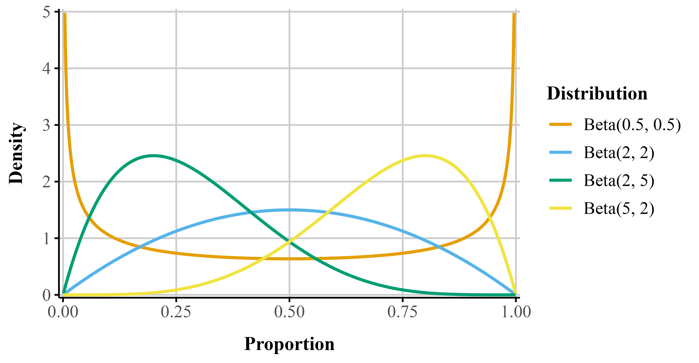
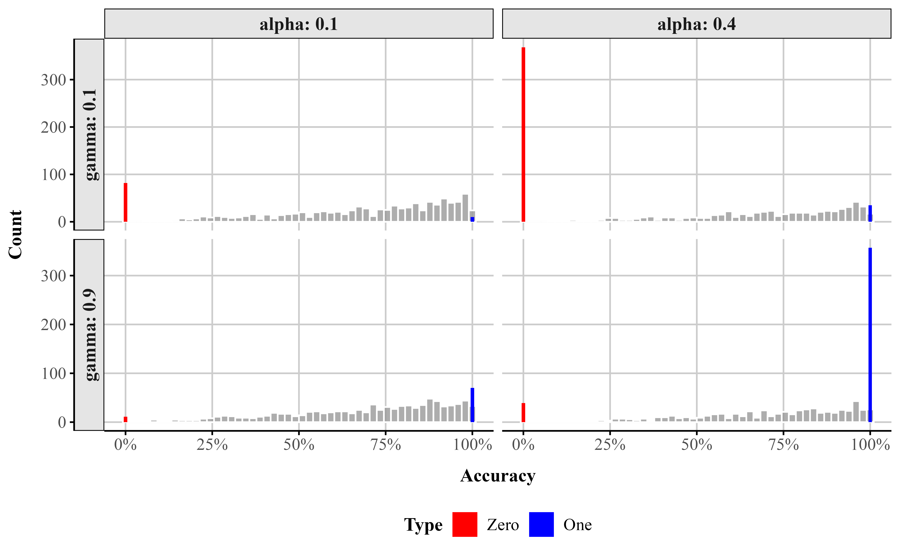

No preregistration. Data, code, and materials for this manuscript can be found at https://github.com/jgeller112/Beta_regression_tutorial The authors have no conflicts of interest to disclose.
Author roles were classified using the Contributor Role Taxonomy (CRediT; https://credit.niso.org/) as follows: Jason Geller: conceptualization, data curation, formal analysis, project administration, resources, visualization, and writing – original draft. Robert Kubinec: formal analysis, validation, and Writing - review & editing. Chelsea M. Parlett Pelleriti: formal analysis and Writing - review & editing. Matti Vuorre: formal analysis, resources, supervision, validation, and Writing - review & editing
Correspondence concerning this article should be addressed to Jason Geller, Department of Psychology and Neuroscience, Boston College, McGuinn 300z, Chestnut Hill, MA 2467, USA, Email: drjasongeller@gmail.com
Abstract
Rates, percentages, and proportions are common outcomes in psychology and the social sciences. These outcomes are often analyzed using models that assume normality, but this practice overlooks important features of the data, such as their natural bounds at 0 and 1. As a result, estimates can become distorted. In contrast, treating such outcomes as Beta-distributed respects these limits and can yield more accurate estimates. Despite these advantages, the use of Beta models in applied research remains limited. Our goal is to provide researchers with practical guidance for adopting Beta regression models, illustrated with an example drawn from the psychological literature. We begin by introducing the Beta distribution and Beta regression, emphasizing key components and assumptions. Next, using data from a learning and memory study, we demonstrate how to fit a Beta regression model in R with the Bayesian package brms and how to interpret results on the response scale. We also discuss model extensions, including zero-inflated, zero- and one-inflated, and ordered Beta models. Basic familarity with regression modeling and R is assumed. To promote wider adoption of these methods, we provide detailed code and materials at https://github.com/jgeller112/Beta_regression_tutorial.
A Beta Way: A Tutorial For Using Beta Regression in Psychological Research
Show R code
# fit models beforehand so tables and figures are in correct place.model1 <-read_rds(here("manuscript", "models", "model_reg_bayes.rds"))model2 <-read_rds(here("manuscript","models","model_beta_bayes_dis_run01.rds"))model3 <-read_rds(here("manuscript", "models", "bayes_zib_model0not1.rds"))model4 <-read_rds(here("manuscript", "models", "bayes_zoib_model.rds"))model5 <-read_rds(here("manuscript", "models", "bayes_ordbeta_phi_model.rds"))
Many key outcomes in psychological research are naturally expressed as proportions or percentages. Examples include the proportion of correct responses on a test (e.g., Kornell & Bjork, 2008), the proportion of time a participant fixates on a particular stimulus in an eye-tracking task (e.g., James et al., 2025), or the proportion of respondents agreeing with a given statement or belief (e.g., Costello et al., 2024). Consider, for instance, a memory experiment in which participants read a short passage, complete a brief distractor task, and then take a final memory test consisting of 10 short‑answer questions. If each question carries a different point value (e.g., question 1 is worth 4 points, question 2 is worth 1 point), a meaningful outcome measure could be the proportion of points earned for each question relative to its maximum possible value.
A key question arises from this example: how should proportional outcomes be analyzed? Researchers frequently default to linear models that assume Gaussian (normal) distributions, such as t-tests, ANOVAs, and linear regression. However, these models make strong assumptions: (1) residuals are normally distributed, (2) the outcome is unbounded (from -\infty to \infty), and (3) variance is constant across the range of the data. These assumptions are rarely satisfied in practice (Sladekova & Field, 2024), and they are especially ill-suited for proportional outcomes, which are bounded between 0 and 1 and often exhibit heteroscedasticity—non-constant variance, particularly near the boundaries (Ferrari & Cribari-Neto, 2004; Paolino, 2001; Smithson & Verkuilen, 2006). Violating these assumptions can lead to biased estimates and spurious inferences, especially when many observations cluster near 0 or 1.
In some cases, it is possible to use a generalized version of the linear model (GLM) that relaxes the assumption of normality. For instance, binomial and Bernoulli models—often referred to as logistic regression when paired with a logit link—are well-suited for binary outcomes (e.g., 0 or 1) or success counts out of a fixed number of trials. However, these models require discretized data and may perform poorly when the data are continuous proportions or exhibit excess variability (i.e., overdispersion), especially near the scale’s boundaries.
The challenges of analyzing proportional data are not new (see Bartlett, 1936). Fortunately, several existing approaches address the limitations of commonly used models. One such approach is Beta regression, an extension of the generalized linear model that employs the Beta distribution (Ferrari & Cribari-Neto, 2004; Paolino, 2001). Beta regression offers a flexible and robust solution for modeling proportional data directly by accounting for boundary effects and over-dispersion, making it a valuable alternative to traditional binomial models. This approach is particularly well-suited for psychological research because it can handle both the bounded nature of proportional data and the non-constant variance often encountered in these datasets (Sladekova & Field, 2024). In addition, the direct modeling of proportions allows comparability across tasks and scales, and can be particularly valuable when only the proportional data is available, as is often the case with secondary data that lack item-level structure or point values.
While in this paper we will focus on proportional-responses that lie between 0 and 1–it is important to note that our analysis applies to any bounded continuous scale. Any bounded scale can be mapped to lie within 0 and 1 without resulting in a loss of information as the transformation is linear.1 Consequently, a scale that has natural end points of -1,234 and +8,451–or any other end points on the real number line short of infinity—can be modeled using the approaches we describe in this paper.
A Beta Way Is Possible
With the combination of open-source programming languages like R (R Core Team, 2024) and their user-developed extensions, analyses such as Beta regression have become increasingly accessible. Yet, adoption of these methods–particularly in psychology–remains limited. One reason may be the lack of informative examples that directly apply to psychological research. Although recent years have seen a surge of interest in Beta regression (Bendixen & Purzycki, 2023; Coretta & Bürkner, 2025; Heiss, 2021; Smithson & Verkuilen, 2006; Vuorre, 2019), its adoption in psychology remains limited.
While previous tutorials have discussed Beta regression, most have been limited in scope–focusing either on the basic model or offering only brief mentions of more applicable alternatives. This tutorial aims to fill that gap by offering a comprehensive and practical tutorial of Beta regression and its extensions. In addition to covering the standard Beta model, we walk through its extensions such as zero-inflated, zero-one-inflated, and ordered Beta regression. These models are important for researchers dealing with boundary values (e.g., exact 0s or 1s) or ordinal response structures.
Beyond model specification, we place strong emphasis on interpreting results on the response scale–that is, in terms of probabilities and proportions–rather than relying on often difficult to interpret parameters. This focus makes the models more accessible and meaningful for psychological applications, where effects are often easier to communicate when framed on the original scale of the outcome (e.g., changes in recall accuracy or task performance). Throughout, we provide reproducible code and annotated examples to help readers implement and interpret these models in their own work.
We begin the tutorial with a non-technical overview of the Beta distribution and its core parameters. We then walk through the process of estimating Beta regression models using the R package brms(Bürkner, 2017), illustrating each step with applied examples. To guide interpretation, we emphasize coefficients, predicted probabilities, and marginal effects calculated using the marginaleffects package (Arel-Bundock et al., 2024). We also introduce several useful extensions–zero-inflated (ZIB), zero-one-inflated (ZOIB), and ordered Beta regression–that enable researchers to model outcomes that include boundary values. Finally, all code and materials used in this tutorial are fully reproducible and available via our GitHub repository: https://github.com/jgeller112/Beta_regression_tutorial2.
Beta Distribution
Proportional data pose some challenges for standard modeling approaches: The data are bounded between 0 and 1 and often exhibit non-constant variance (heteroscedasticity) (Ferrari & Cribari-Neto, 2004; Paolino, 2001). Common distributions used within the generalized linear model frameworks often fail to capture these properties adequately, which can necessitate alternative modeling strategies.
While we do not have time to delve fully into its derivation, the Beta distribution is a preferred distribution for this type of response because of certain unique properties. The Beta distribution is defined as a distribution of the uncertainty of probabilities, which must lie within 0 and 1. As a consequence, the Beta distribution is the maximum entropy distribution for any bounded continuous random variable, which means that the Beta distribution can represent the full range of possibilities of such a scale.3 As a consequence, if we have a continuous scale with upper and lower bounds–and no other special conditions–the Beta distribution will in principle provide a very good approximation of the uncertainty of the scale.
Typically, the expected value (or mean) of the response variable is the central estimand scholars want to estimate. A model should specify how this expected value depends on explanatory variables through two main components: a linear predictor, which combines the explanatory variables in a linear form (a+b_1x_1+b_2x_2, etc.), and a link function, which connects the expected value of the response variable to the linear predictor (e.g, E[Y] = g(a + b_1x_1 + b_2x_2)). In addition, a random component specifies the distribution of the response variable around its expected value (such as Poisson or binomial distributions, which belong to the exponential family) (Nelder & Wedderburn, 1972). Together, these components provide a flexible framework for modeling data with different distributional properties.
The Beta distribution is continuous and restricted to values between 0 and 1 (exclusive). Its two parameters–commonly called shape1 (\alpha) and shape2 (\beta)–govern the distribution’s location, skewness, and spread. By adjusting these parameters, the distribution can take many functional forms (e.g., it can be symmetric, skewed, U-shaped, or even approximately uniform; see Figure 1).
To illustrate, consider a test question worth seven points. Suppose a participant scores five out of seven. The number of points received (5) can be treated as \alpha, and the number of points missed (2) as \beta. The resulting Beta distribution would be skewed toward higher values, reflecting a high performance (yellow line in Figure 1; “Beta(5, 2)”). Reversing these values would produce a distribution skewed toward lower values, representing poorer performance (green line in Figure 1; “Beta(2, 5)”).
Show R code
# Function to generate Beta distribution datamake_Beta_df <-function(shape1, shape2, n =9000) { x <-seq(0.001, 0.999, length.out = n)data.frame(x = x,y =dbeta(x, shape1, shape2),label =paste0("Beta(", shape1, ", ", shape2, ")") )}# Combine distributionsBeta_df <-bind_rows(make_Beta_df(0.5, 0.5),make_Beta_df(2, 2),make_Beta_df(5, 2),make_Beta_df(2, 5)) %>%mutate(label =factor(label))ggplot( Beta_df,aes(x = x, y = y, label = label, group = label, color = label)) +geom_line(linewidth =0.9) +scale_color_okabe_ito(name ="Distribution" ) +scale_x_continuous("Proportion",expand =expansion(0.01) ) +scale_y_continuous("Density",limits =c(0, 5),expand =expansion(0.01) ) +theme_publication() +theme(legend.position ="right")
Figure 1
Beta distributions with different shape1 and shape2 parameters.

I Can’t Believe It’s Not Beta
While the standard parameterization of the Beta distribution uses \alpha and \beta, a reparameterization to a mean (\mu) and precision (\phi) is more useful for regression models. The mean represents the expected value of the distribution, while the dispersion, which is inversely related to variance, reflects how concentrated the distribution is around the mean, with higher values indicating a narrower distribution and lower values indicating a wider one. The connections between the Beta distribution’s parameters are shown in Equation 1. Importantly, the variance depends on the average value of the response because uncertainty intervals need to adjust for how close the value of the response is to the boundary.
\begin{aligned}[t]
\text{Shape 1:} && a &= \mu \phi \\
\text{Shape 2:} && b &= (1 - \mu) \phi
\end{aligned}
\qquad\qquad\qquad
\begin{aligned}[t]
\text{Mean:} && \mu &= \frac{a}{a + b} \\
\text{Precision:} && \phi &= a + b \\
\text{Variance:} && var &= \frac{\mu \cdot (1 - \mu)}{1 + \phi}
\end{aligned}
\tag{1}
Thus, Beta regression allows modeling both the mean and precision of the outcome distribution. To ensure that \mu stays between 0 and 1, we apply a link function, which allows linear modeling of the mean on an unbounded scale. A common link-function choice is the logit, but other functions such as the probit or complementary log-log are possible.
The logit function, \text{logit}(\mu) = \log \left( \frac{\mu}{1 - \mu} \right) links the mean to log-odds which are unbounded, making linear modeling possible. The inverse of the logit, called the logistic function, maps the linear predictor \eta back to the original scale of the data \left(\mu = \frac{1}{1 + e^{-\eta}}\right). Similarly, the strictly positive dispersion parameter is usually modeled through a log link function, ensuring it remains positive.
By accounting for the observations’ natural limits and non-constant variance across different values, the Beta distribution is useful in psychology where outcomes like performance rates or response scales frequently exhibit these features.
Bayesian Approach to Beta Regression
Beta regression models can be estimated with both frequentist and Bayesian methods. We adopt a Bayesian framework because it makes estimating and interpreting more complex models easier (Gelman et al., 2013; Johnson et al., 2022; McElreath, 2020). Generally speaking, most Bayesian analyses can also be implemented with frequentist methods like maximum likelihood, but more complex techniques may require adjustments like bootstrapping. The main limitation of Bayesian modeling is that it is slower than frequentist approaches, but we note that modern Bayesian computation engines are reasonably fast and that explanatory modeling necessarily emphasizes deriving appropriate estimands over computational convenience. We use the R package brms(Bürkner, 2017), a high-level interface to the probabilistic programming language Stan (Team, 2023), because it uses standard R regression formula syntax but extends its scope while remaining accessible for non-expert users. The package also implements parallel processing that can dramatically shorten computational times for larger datasets.
There are several important differences between our Bayesian analysis and the frequentist methods readers may be more familiar with—most notably, the absence of t- and p-values. To estimate models, the brms package uses Stan’s computational algorithms to draw random samples from the posterior distribution, which represents uncertainty about the model parameters. This posterior is conceptually analogous to a frequentist sampling distribution.
By default, the Bayesian models run 2,000 posterior draws,4 which allow us to compute quantities such as the posterior mean (similar to a frequentist point estimate) and the 95% credible interval (Cr.I), which is often compared to a confidence interval.In addition, we report the probability of direction (pd), which reflects the probability that a parameter is strictly positive or negative. When a uniform prior is used (all values equally likely in the prior), a pd of 95%, 97.5%, 99.5%, and 99.95% corresponds approximately to two-sided p-values of .10, .05, .01, and .001 (i.e., pd ≈ 1 − p/2 for symmetric posteriors with weak/flat priors) (see Figure 2 for an illustrative comparison). For directional hypotheses, the pd can be interpreted as roughly equivalent to one minus the p-value (Marsman & Wagenmakers, 2016).
A Bayesian posterior distribution (assuming a uniform prior) centered at a point estimate chosen so that the probability of direction (pd) equals 0.95, and a Frequentist sampling distribution (under the null; centered at 0). In the Bayesian posterior distribution, the blue area represents the pd, and the red area represents the remaining 1 − pd of the distribution. In the Frequentist sampling distribution, the red tail areas represent the rejection region at α = 0.10. In this example, the posterior mean lies exactly at the 1 - \frac{\alpha}{2} quantile of the null sampling distribution. For symmetric posteriors with flat priors, the pd is numerically equivalent to the one-sided p-value.
For reasons of space, we refer readers unfamiliar to Bayesian data analysis to several existing books on the topic (Gelman et al., 2013; Kruschke, 2015; McElreath, 2020). In addition, we assume readers are familiar with R, but those in need of a refresher should find Wickham et al. (2023) useful.
Beta Regression Tutorial
Example Data
Throughout this tutorial, we analyze data from a memory experiment examining whether the fluency of an instructor’s delivery affects recall performance (Wilford et al., 2020, Experiment 1A). Instructor fluency—marked by expressive gestures, dynamic vocal tone, and confident pacing—has been shown to influence students’ perceptions of learning, often leading learners to rate fluent instructors more favorably (Carpenter et al., 2013). However, previous research suggests that these impressions do not reliably translate into improved memory performance (e.g., Carpenter et al., 2013; Toftness et al., 2017; Witherby & Carpenter, 2022). In contrast, Wilford et al. (2020) found that participants actually recalled more information after watching a fluent instructor compared to a disfluent one. This surprising finding makes the dataset a compelling case study for analyzing proportion data, as recall was scored out of 10 possible idea units per video.
In Experiment 1A, participants watched two short instructional videos, each delivered either fluently or disfluently. Fluent videos featured instructors with smooth delivery and natural pacing, while disfluent videos included hesitations, monotone speech, and awkward pauses. After a distractor task, participants completed a free recall test, writing down as much content as they could remember from each video within a three-minute window. Their recall was then scored for the number of idea units correctly remembered.
Listing 1: Data needed to run examples
# get data here from githuburl <-str_glue("https://raw.githubusercontent.com/jgeller112/","Beta_regression_tutorial/refs/heads/main/","manuscript/data/fluency_data.csv")fluency_data <-read.csv(url)
Our primary outcome variable is the proportion of idea units recalled on the final test, calculated by dividing the number of correct units by 10. We show a sample of these data in Table 1. The dataset can be downloaded from Github (Listing 1). Because this is a bounded continuous variable (i.e., it ranges from 0 to 1), it violates the assumptions of typical linear regression models that treat outcomes as normally distributed. Despite this, it remains common in psychological research to analyze proportion data using models that assume normality. In what follows, we reproduce Wilford et al. (2020)’s analysis and then re-analyze the data using Beta regression and highlight how it can improve our inferences.
Table 1
Four observations from Wilford et al. (2020). Accuracy refers to the proportion of correctly recalled idea units.
Participant
Fluency
Accuracy
64
Disfluent
0.10
30
Fluent
0.60
12
Fluent
0.10
37
Fluent
0.35
Reanalysis of Wilford et al. Experiment 1A
In their original analysis of Experiment 1A, Wilford et al. (2020) compared memory performance between fluent and disfluent instructor conditions using a traditional independent-samples t-test. They found that participants who watched the fluent instructor recalled significantly more idea units than those who viewed the disfluent version (see Figure 3).
Show R code
ggplot(fluency_data, aes(x = Fluency, y = Accuracy, fill = Fluency)) +geom_rain(aes(color = Fluency),shape =21,size = .6,alpha =0.55,width =0.1 ) +# Add black mean dot, nudged to centerstat_summary(fun = mean,geom ="point",shape =21,size =3,fill ="black",color ="black",position =position_nudge(x = .1) # adjust as needed ) +scale_y_continuous(labels =label_percent()) +scale_fill_okabe_ito(aesthetics =c("fill", "color")) +theme_publication() +theme(legend.position ="none",axis.title.x =element_blank() )
Figure 3
Raincloud plot depicting accuracy distributions for the Fluent and Disfluent conditions. Each condition shows individual data points, a density plot, and summary statistics to illustrate variability and central tendency.
We first replicate this analysis in a regression framework using brms. We model final test accuracy–the proportion of correctly recalled idea units across the videos–as the dependent variable. Our predictor is instructor fluency, with two levels: Fluent and Disfluent. We use treatment (dummy) coding, which is the default in R. This coding scheme sets the first level of a factor (in alphabetical order) as the reference level. In this case, Disfluent is the reference, and the coefficient for Fluent reflects the contrast between fluent and disfluent instructor conditions.
We first start by loading the brms(Bürkner, 2017) and cmdstanr(Gabry et al., 2024) packages (Listing 2). We use the cmdstanr backend for Stan (Team, 2023) because it’s faster than the default used to run models (i.e., rstan),5 though all of these models can also be fit with brms defaults.
We fit the model using the brm() function from the brms package (Listing 3). Although not shown here, we ran the models using four chains (the default), executed in parallel across four cores. When the model is run in Listing 3, the model summary output will appear in the R console. The output from bayes_reg_model shows each parameter’s posterior summary: The posterior distribution’s mean and standard deviation (analogous to the frequentist standard error) and its 95% credible interval, which indicate the 95% of the most credible parameter values. In brms, the reported Cr.I is an equal-tailed interval, meaning that the probability mass excluded from the interval is split equally between the lower and upper tails. Additionally, the output indicates numerical estimates of the sampling algorithm’s performance: Rhat should be close to one, and the ESS (effective sample size) metrics should be as large as possible given the number of iterations specified (default is 4000). Generally, ESS >= 1000 is recommended (Bürkner, 2017). For the models we present in this paper, convergence is trivial with standard linear mixed models, though we note that these metrics are still important to pay attention to in case of model mis-fit.
Our main question of interest is: Does instructor fluency have an effect on final test performance? In order to answer this question, we will have to look at the output summary produced by Listing 3. the Intercept refers to the posterior mean accuracy in the disfluent condition, M = 0.256 , as fluency was dummy-coded. The fluency coefficient (FluencyFluent) reflects the mean posterior difference in recall accuracy between the fluent and disfluent conditions: b = 0.085. The 95% credible interval for this estimate spans from 0.003 to 0.171. These values are shown in the “95% Cr.I” columns of the output. These results closely mirror the findings reported by Wilford et al. (2020) (Experiment 1A).
Show R code
summary(bayes_reg_model)
Family: gaussian
Links: mu = identity; sigma = identity
Formula: Accuracy ~ Fluency
Data: fluency_data (Number of observations: 96)
Regression Coefficients:
Estimate Est.Error l-95% CI u-95% CI Rhat Bulk_ESS Tail_ESS
Intercept 0.26 0.03 0.20 0.31 1.00 4158 2959
FluencyFluent 0.08 0.04 0.00 0.17 1.00 4448 2871
Further Distributional Parameters:
Estimate Est.Error l-95% CI u-95% CI Rhat Bulk_ESS Tail_ESS
sigma 0.21 0.02 0.18 0.24 1.00 4177 2663
The output also includes the effective sample size (ESS) and R̂ (R-hat) values, both of which fall within acceptable ranges, indicating good model convergence. Throughout the tutorial, we focus on posterior mean estimates and their 95% credible intervals. In addition, we include the pd measure in the main summary table (Table 2), which is provided by the bayestestR package (Makowski, Ben-Shachar, Chen, et al., 2019; Makowski, Ben-Shachar, & Lüdecke, 2019). This measure offers an intuitive parallel to p-values that many readers may be familiar with.
Listing 4: Getting BF using hypothesis() function from brms
# test non-zero effectfluency_effect <-hypothesis(bayes_reg_model, "FluencyFluent > 0")
Table 3
Evidence ratio for the difference between fluent and disfluent conditions
Hypothesis
Mean
95% Cr.I
ER
(FluencyFluent) > 0
0.085
[0.014, 0.156]
45.512
For example, the fluency effect has a pd of .977, which indicates a high probability that the effect is positive rather than negative (akin to p < .05). However, pd does not tell us the probability that the effect is non-zero. To assess this, we can compare a model where the effect is greater than 0 to an alternative model where the effect is less than 0. The hypothesis() function in brms (see Listing 4) allows us to perform this comparison. Running the code returns a column called ER (Evid.Ratio), which contains a numerical value that represents the Bayes factor for a directional hypothesis (Table 3). The evidence ratio (ER) for the fluency effect is 45.5116279, providing very strong evidence that the effect is both non-zero and positive (Jeffries, 1961; Kass & Raftery, 1995).
Beta Regression
Wilford et al. (2020) observed that instructor fluency impacts actual learning, using a t-test. But recall this approach assumes normality of residuals and homoscedacity. These assumptions are unrealistic when the response values approach the scale boundaries (Sladekova & Field, 2024). Does the data we have meet those assumptions? We can use the function check_model() from easystats(Lüdecke et al., 2022) to check our assumptions easily. The code in Listing 5 automatically produces Figure 4. We can see some issues with our data. Specifically, there appears to be violations of constant variance across the values of the scale (homoskedasticity). In plain terms, this type of model mis-specfication means that a standard OLS model can predict non-sensical values outside the bounds of the scale.
Listing 5: Checking assumptions with the check_model() from easystats package .
Two assumption checks for our OLS model: Normality (left) and Homoskedasticity (right)
We can also examine how well the data fits the model by performing a posterior predictive check using the pp_check() function from brms. A posterior predictive check involves looking at multiple draws or repetitions from the posterior distribution and plotting it against the observed data. Ideally, the predictive draws (the light blue lines) should show reasonable resemblance with the observed data (dark blue line). In our example (see Figure 5 (A)) the model-predicted density is slightly too peaked and narrow compared to the data. In addition, some of the draws extend into negative accuracy values.
The plots show 100 posterior predicted distributions with the label yrep (light blue), the distribution of accuracy in dark blue for regular regression (A) , Beta regression (B), and ZIB (C) models
Given the outcome variable is proportional, one solution would be to run a Beta regression model. Again, we can create the Beta regression model in brms. In brms, we model each parameter independently. Recall from the introduction that in a Beta model we model two parameters–\mu and \phi. We can easily do this by using the bf() function from brms (Listing 6). bf() facilitates the specification of several sub-models within the same formula call. We fit two formulas, one for \mu and one for \phi and store it in the model_Beta_bayes object below. In the below bf() call, we are modeling Fluency as a function of Accuracy only for the \mu parameter. For the \phi parameter, we are only modeling the intercept value. This is saying dispersion does not change as a function of fluency.
To run our Beta regression model, we need to exclude 0s and 1s in our data set. If we try to run a model with our data data_fluency we get an error: Error: Family 'Beta' requires response greater than 0. This is because the Beta distribution only supports observations in the 0 to 1 interval excluding exact 0s and 1s. We need make sure there are no 0s and 1s in our dataset.
The dataset contains nine 0s and one 1. One approach is to nudge our 0s towards .01 and our 1s to .99, or apply a special formula (Smithson & Verkuilen, 2006) so values fall within the [0, 1] interval. We implore readers not to engage in this practice. Kubinec (2022) showed that this practice can result in serious distortion of the outcome as the sample size 𝑁 grows larger, resulting in ever smaller values that are “nudged”. Because the Beta distribution is a non-linear model of the outcome, values that are very close to the boundary, such as 0.00001 or 0.99999, will be highly influential outliers.To run this Beta model we will remove the 0s and 1s, and later in this article we will show how to jointly model these scale end points with the rest of the data. The model from Listing 6 uses a transformed data_fluency object (called data_Beta) where 0s and 1s are removed. When we run this code we should not get an error.
Listing 6: Fitting a Beta model without 0s and 1s in brm().
# set up model formualmodel_Beta_bayes <-bf( Accuracy ~ Fluency, # fit mu model phi ~1# fit phi model)# transform 0 to 0.1 and 1 to .99data_Beta <- fluency_data |>filter( Accuracy !=0, Accuracy !=1 )Beta_brms <-brm( model_Beta_bayes,data = data_Beta,family =Beta(),file ="model_Beta_bayes_reg_01")
Model Parameters
In Table 2 under the Beta Regression column, the first set of coefficients represent how factors influence the \mu parameter estimates (which is the mean of the Beta distribution), which are labeled with an underscore b_. These coefficients are interpreted on the scale of the logit, meaning they represent linear changes on a nonlinear space. The intercept term (b_Intercept) represents the log odds of the mean on accuracy for the fluent instructor. Log odds that are negative indicate that it is more likely a “success” (like getting the correct answer) will NOT happen than that it will happen. Similarly, regression coefficients in log odds forms that are negative indicate that an increase in that predictor leads to a decrease in the predicted probability of a “success”.
The other component we need to pay attention to is the dispersion or precision parameter coefficients labeled as b_phi in Table 2. The dispersion (\phi) parameter tells us how precise our estimate is. Specifically, \phi in Beta regression tells us about the variability of the response variable around its mean. Specifically, a higher dispersion parameter indicates a narrower distribution, reflecting less variability. Conversely, a lower dispersion parameter suggests a wider distribution, reflecting greater variability. The main difference between a dispersion parameter and the variance is that the dispersion has a different interpretation depending on the value of the outcome, as we show below. The best way to understand dispersion is to examine visual changes in the distribution as the dispersion increases or decreases.
Understanding the dispersion parameter helps us gauge the precision of our predictions and the consistency of the response variable. In Beta_brms we only modeled the dispersion of the intercept. When \phi is not specified, the intercept is modeled by default (see Table 2). The intercept under the precision heading is not that interesting. It represents the overall dispersion in the outcome across all conditions. Instead, we can model different dispersions across levels of the Fluency factor. To do so, we add Fluency to the phi model in bf(). We model the precision (phi) of the Fluency factor by using a ~ and adding factors of interest to the right of it (Listing 7).
Listing 7: Fitting Beta model with dispersion in brm().
model_Beta_bayes_disp <-bf( Accuracy ~ Fluency, # Model of the mean phi ~ Fluency # Model of the precision)Beta_brms_dis <-brm( model_Beta_bayes_disp,data = data_Beta,family =Beta(),file ="model_Beta_bayes_dis_run01")
Table 2 displays the model summary with the precision parameter added to our model as a function of fluency. It is important to note that the estimates are logged and not on the original scale (this is only the case when additional parameters are modeled). To interpret them on the original scale, we can exponentiate the log-transformed value–this transformation gets us back to our original scale. In the below model call, we set exponentiate = TRUE.
Beta regression model summary for fluency factor with \phi parameter exponentiated
Parameter
Mean
95% Cr.I
pd
b_phi_Intercept
4.95
[3.247, 7.264]
1
b_phi_FluencyFluent
1.54
[0.877, 2.738]
0.933
The \phi intercept represents the precision of the fluent condition. The \phi coefficient for FluencyFluent represents the change in that precision for performance between the fluent vs. disfluent conditions. The credible interval does not include 0, meaning that zero is not among the 95% most credible parameter values.
It is important to note that these estimates are not the same as the marginal effects we discussed earlier. Changes in dispersion affect the spread or variability of the response distribution without necessarily altering its mean. This makes dispersion particularly relevant for research questions that focus on features of the distribution beyond the average—such as how concentrated responses are. For instance, high dispersion might indicate that individuals cluster at the extremes (e.g., very high or very low ratings), suggesting clustering in the outcome.
A critical assumption of the GLM is homoscedasticity, which means constant variance of the errors. WIth Beta regression model we can include a dispersion parameter for Fluency. Properly accounting for dispersion is crucial because it impacts the precision of our mean estimates and, consequently, the significance of our coefficients. The inclusion of dispersion in the our model increased the uncertainty of the \mu coefficient (see Figure 6). This suggests that failing to account for the dispersion of the variables might lead to biased estimates. This highlights the potential utility of an approach like Beta regression over a traditional approach as Beta regression can explicitly model dispersion and address issues of heteroscedasticity.
It is only necessary to model the dispersion with covariates when there is reason to believe that this variation is substantively relevant to the research question. In case there is uncertainty about the best model, a relatively agnostic approach would be to compare models, for example with leave one out (loo) cross validation, to examine if a dispersion parameter should be considered in our model.6
Figure 6
Comparison of posterior distributions for the risk difference in fluency: Simple model (no dispersion for Fluency) vs. complex model with dispersion
Predicted Probabilities
Parameter estimates are usually difficult to interpret on their own. We argue that researchers should not spend too much time interpreting raw coefficients from non-linear models. We report them in this tutorial for completeness. Instead researchers should discuss the effects of the predictor on the actual outcome of interest (in this case the 0-1 scale). The logit link allows us to transform back and forth between the scale of a linear model and the nonlinear scale of the outcome, which is bounded by 0 and 1. By using the inverse of the logit, we can easily transform our linear coefficients to obtain average effects on the scale of the proportions or percentages, which is usually what is interesting to applied researchers. In a simple case, we can do this manually, but when there are many factors in your model this can be quite complex.
In our example, we can use the plogis() function in base R to convert estimates from the log-odds (logit) scale to the probability scale. The intercept of our model is -0.918, which reflects the log-odds of the mean accuracy in the disfluent condition. If the estimated difference between the fluent and disfluent conditions is 0.24 on the log-odds scale, we first add this value to the intercept value (-0.918) to get the log-odds for the fluent condition: -0.83 + 0.20 = -0.63. We then use plogis() to convert both log-odds values to probabilities (Fluent = 35%, Disfluent = 30%).
This is pretty easy to do manually, but when your model has many predictors, it can be quite cumbersome. To help us extract predictions from our model and visualize them we will use a package called marginaleffects(Arel-Bundock et al., 2024) (see Listing 8). To get the proportions for each of our categorical predictors on the \mu parameter we can use the function from the package called predictions(). These are displayed in Table 5. These probabilities match what we calculated above.
Listing 8: Load the marginaleffects package.
library(marginaleffects)
Listing 9: Predictions from the Beta model for each level of Fluency.
predictions( Beta_brms,# need to specify the levels of the categorical predictornewdata =datagrid(Fluency =c("Disfluent", "Fluent")))
Table 5
Predicted probabilitiesfor fluency factor.
Fluency
Mean
95% Cr.I
Disfluent
0.297
[0.246, 0.35]
Fluent
0.354
[0.304, 0.407]
For the Fluency factor, we can interpret Mean as proportions or percentages. That is, participants who watched the fluent instructor scored on average 35% on the final exam compared to 30% for those who watched the disfluent instructor. We can also visualize these from marginaleffects using the plot_predictions() function (see Listing 10).
Listing 10: Plot predicted probabilities using plot_predictions() from marginaleffects
Beta_plot <-plot_predictions(Beta_brms, by ="Fluency")
The plot_predictions() function will only display the point estimate with the 95% credible intervals. However, Bayesian estimation methods generate distributions for each parameter. This approach allows visualizing full uncertainty estimates beyond points and intervals. Using the marginaleffects package, we can obtain samples from the posterior distribution with the posterior_draws() function (see Listing 11). We can then plot these results to illustrate the range of plausible values for our estimates at different levels of uncertainty (see Figure 7).
Listing 11: Extracting posterior draws from the Beta regression model.
# Add a model identifier to each datasetpred_draws_Beta <-avg_predictions(Beta_brms, variables ="Fluency") |>posterior_draws()
Show R code
# Plot both modelsggplot(pred_draws_Beta, aes(x = draw, y = Fluency, fill = Fluency)) +stat_halfeye(.width =c(.5, .8, .95), alpha =0.7) +scale_fill_okabe_ito() +scale_x_continuous(labels =label_percent()) +labs(x ="Accuracy",y ="Fluency",caption ="50%, 80% and 95% credible intervals shown in black" ) +geom_vline(xintercept =0, color ="black", linetype ="solid", size =1.2) +theme_publication() +theme(legend.position ="none")
Figure 7
Predicted probablity posterior distributions by fluency
Marginal Effects
Marginal effects provide a way to understand how changes in a predictor influence an outcome, holding all other factors constant in a specific manner. Technically, marginal effects are calculated using partial derivatives for continuous variables or finite differences for categorical and continuous variables, depending on the nature of the data and the research question. Substantively, these procedures translate raw regression coefficients back into effects that represent changes in the bounded outcome, such as an x% change in the value of a proportion.
There are various types of marginal effects, and their calculation can vary across software packages. For example, the popular emmeans package (Lenth, 2025) computes marginal effects by holding all predictors at their means. In this tutorial, we will use the marginaleffects package (Arel-Bundock et al., 2024), which focuses on average marginal effects (AMEs) by default. AMEs summarize effects by generating predictions for each row of the original dataset and then averaging these predictions. This approach retains a strong connection to the original data while offering a straightforward summary of the effect of interest.
One practical application of AMEs is calculating the average difference between two groups or conditions (called the risk difference). Using the avg_comparisons() function in the marginaleffects package (Listing 12), we can compute this metric directly. By default, the function calculates the discrete difference between groups. The function can also compute other effect size metrics, such as odds ratios and risk ratios, depending on the research question. This flexibility makes it a powerful tool for interpreting regression results in a meaningful way.
Listing 12: Calculating the difference between probabilities with avg_comparisons()
#|# get risk difference by defaultBeta_avg_comp <-avg_comparisons(Beta_brms, comparison ="difference")
Table 6
Fluency difference
Term
Contrast
Mean
95% Cr.I
Fluency
Fluent - Disfluent
0.057
[-0.013, 0.127]
Table 6 presents the estimated difference for the fluency factor (Mean column). The difference between the fluent and disfluent conditions is 0.06, indicating that participants who watched a fluent instructor scored, on average, 6% higher on the final recall test than those who watched a disfluent instructor. However, the 95% credible interval includes 0 among the most credible values, suggesting we cannot rule out the possibility of a null or weakly negative effect.
To formally assess evidence in favor of the null hypothesis (i.e., that the effect is exactly zero), we can use the hypothesis() function from the brms package to compute an evidence ratio (ER), which is a Bayes factor for directional or point hypotheses.7However, it is important to note that this procedure requires weakly informative or informative priors; the default priors in brms are too diffuse and therefore cannot be used to accurately compute the ER in favor of a point null hypothesis.
Show R code
# Proportionsp1 <-0.35# Fluentp2 <-0.30# Disfluent# Cohen's h formulacohens_h <-2* (asin(sqrt(p1)) -asin(sqrt(p2)))#CI lower and upper boundsp1_lower <-0.328p1_upper <-0.419p2_lower <-0.250p2_upper <-0.329# Lower bound of hh_lower <-2* (asin(sqrt(p1_lower)) -asin(sqrt(p2_upper)))# Upper bound of hh_upper <-2* (asin(sqrt(p1_upper)) -asin(sqrt(p2_lower)))
In psychology, it is common to report effect size measures like Cohen’s d(Cohen, 1977). When working with proportions we can calculate something similar called Cohen’s h. Taking our proportions, we can use the below equation (Equation 2) to calculate Cohen’s h along with the 95% Cr.I around it. Using this metric we see the effect size is small (0.107), 95% credible interval [-0.002, 0.361].
h = 2 \cdot \left( \arcsin\left(\sqrt{p_1}\right) - \arcsin\left(\sqrt{p_2}\right) \right)
\tag{2}
Posterior Predictive Check
Figure 5 (B) shows the predictive check for our Beta model. The model does a pretty good job at capturing the data (The draws are now between 0-1) and the predicted values from the model follow the observed data. However, it could be better.
Zero-Inflated Beta (ZIB) Regression
A limitation of the Beta regression model is that it can only accommodate values strictly between 0 and 1—it cannot handle values exactly equal to 0 or 1. In our dataset, we observed 9 rows where Accuracy equals zero. To fit a Beta regression model, we removed these values, but we have left out potentially valuable information from our model–especially if the end points of the scale are distinctive in some way. In our case, these 0s may be structural—that is, they represent real, systematic instances where participants failed to answer correctly (rather than random noise or measurement error). For example, the fluency of the instructor might be a key factor in predicting these zero responses. We will discuss two approaches for jointly modeling these end points with the continuous data. First, we can use a zero-inflated Beta (ZIB) model. This model still estimates the mean (\mu) and precision (\phi) of the Beta distribution for values between 0 and 1, but it also includes an additional parameter, \alpha, which captures the probability of observing structural 0s.
The zero-inflated Beta models a mixture of the data-generating process. The \alpha parameter uses a logistic regression to model whether the data is 0 or not. Substantively, this could be a useful model when we think that 0s come from a process that is relatively distinct from the data that is greater than 0. For example, if we had a dataset with proportion of looks or eye fixations to certain areas on marketing materials, we might want a separate model for those that do not look at certain areas on the screen because individuals who do not look might be substantively different than those that look.
We can fit a ZIB model using brms and use the marginaleffects package to make inferences about our parameters of interest. Before we run a zero-inflated Beta model, we will need to transform our data again and remove the one 1 value in our data–we can keep our 0s. Similar to our Beta regression model we fit in brms, we will use the bf() function to fit several models. We fit our \mu and \phi parameters as well as our zero-inflated parameter (\alpha; here labeled as zi). In brms we can use the zero_inflated_Beta family (see Listing 13).
Listing 13: Fitting zib model with brm()
# keep 0 but remove 1data_Beta_0 <- fluency_data |>filter(Accuracy !=1)# set up model formual for zero-inflated Beta in brmzib_model <-bf( Accuracy ~ Fluency, # The mean of the 0-1 values, or mu phi ~ Fluency, # The precision of the 0-1 values, or phi zi ~ Fluency, # The zero-or-one-inflated part, or alphafamily =zero_inflated_beta())# fit zib model with brmfit_zi <-brm(formula = zib_model,data = data_Beta_0,file ="bayes_zib_model0not1")
Posterior Predictive Check
The ZIB model does a bit better at capturing the structure of the data then the Beta regression model (see Figure 5). Specifically, the ZIB model more accurately captures the increased density of values near the lower end of the scale (i.e., near zero), which the standard Beta model underestimates. The ZIB model’s predictive distributions also align more closely with the observed data across the entire range, particularly in the peak and tail regions. This improved fit likely reflects the ZIB model’s ability to explicitly model excess 0s (or near-zero values) via its inflation component, allowing it to better account for features in the data that a standard Beta distribution cannot accommodate.
Show R code
pp_check3 <-pp_check(fit_zi, ndraws =100) +# ndraws is nutheme_publication()
Predicted Probabilities and Marginal Effects
Table 2 under the zero-inflated Beta regression column provides a summary of the posterior distribution for each parameter. As stated before, it is preferable to back-transform our estimates to get probabilities. To get the predicted probabilities we can again use the avg_predictions() and avg_comparisons() functions from marginaleffects package (Arel-Bundock, 2024) to get predicted probabilities and the probability difference between the levels of each factor. We can model the parameters separately using the dpar argument setting to: \mu, \phi, \alpha. Here we look at the risk difference for Fluency under each parameter.
Mean.
As shown in Table 7, there is little evidence for an effect of Fluency – the 95% Cr.I includes zero, suggesting substantial uncertainty about the direction and magnitude of the effect–that is, though most of the posterior density supports positive effects, nil and weakly negative effects cannot be ruled out.
As shown in Table 8, the posterior estimates suggest a credible effect of Fluency on dispersion (\phi), with disfluent responses showing greater variability. The 95% Cr.I for the fluency contrast does not include zero, indicating a high probability in differences in precision.
We can harness the power of marginaleffects again and plot the posterior difference between the fluent and disfluent conditions (see Figure 8). In Figure 8, there is evidence that watching a lecture video with a fluent instructor reduces the probability of a zero response by approximately 13%. The 95% Cr.I for this effect does not include zero, suggesting a meaningful reduction in the likelihood of zero outcomes under fluent instruction. We can harness the power of marginaleffects again and plot the posterior probability of each level (see Figure 8).
Visualization of the predicted difference for zero-inflated part of model
Zero-One-Inflated Beta (ZOIB)
The ZIB model works well if you have 0s in your data, but not 1s.8 In our previous examples we either got rid of both 0s and 1s (Beta regression), or removed the 1s (ZIB). Sometimes it is theoretically useful to model both 0s and 1s as separate processes or to consider these values as essentially similar parts of the continuous response, as we show later in the ordered Beta regression model. For example, this is important in visual analog scale data where there might be a prevalence of responses at the bounds (Kong & Edwards, 2016), in JOL tasks (Wilford et al., 2020), or in a free-list task where individuals provide open responses to some question or topic which are then recoded to fall between 0-1 (Bendixen & Purzycki, 2023). Here 0s and 1s are meaningful; 0 means item was not listed and 1 means the item was listed first.
Similar to our Beta and zero-inflated models above, we can fit a ZOIB model in brms quite easily using the zero_one_inflated_Beta family. In this model, we simultaneously estimate the mean (\mu) and precision (\phi) of the Beta distribution, a zero-one inflation parameter (\alpha) that represents the probability that an observation is either exactly 0 or 1 (i.e., 0 or 1 vs. not 0 or 1) and a conditional one-inflation parameter (\gamma) that represents the probability that, given an observation is at one of the endpoints, it is 1 (i.e, 1 vs. not 1). This specification captures the entire range of possible values while remaining constrained between 0 and 1. To get a better sense of how \alpha and \gamma control the distribution of values, Figure 9 presents simulated data across combinations of these parameters. As \alpha increases, we see a greater proportion of responses at the endpoints. As \gamma increases, the proportion of endpoint responses at 1 grows relative to 0, making the spikes at 1 more prominent as \gamma approaches 1. This visualization illustrates how the ZOIB model flexibly accounts for both the continuous portion of the distribution and the occurrence of exact 0s and 1s.
Simulated data from a ZOIB model illustrating the effects of the zero-one inflation parameter (\alpha) and the conditional one-inflation parameter (\gamma).

To fit a ZOIB model we use the bf() function. We model each parameter as a function of Fluency. We then pass the zoib_model to our brm() function (see Listing 14). The summary of the output is in Table 2 (under ZOIB).
Listing 14: Fitting a ZOIB model with brm().
# fit the zoib modelzoib_model <-bf( Accuracy ~ Fluency, # The mean of the 0-1 values, or mu phi ~ Fluency, # The precision of the 0-1 values, or phi zoi ~ Fluency, # The zero-or-one-inflated part, or alpha coi ~ Fluency, # The one-inflated part, conditional on the 1s, or gammafamily =zero_one_inflated_beta())fit_zoib <-brm(formula = zoib_model,data = fluency_data,file ="bayes_zoib_model")
Model Parameters
The output for the model is lengthy because we are estimating three distinct components, each with their own independent responses and sub-models. All the coefficients are on the logit scale, except \phi , which is on the log scale. Thankfully drawing inferences for all these different parameters, plotting their distributions, and estimating their average marginal effects looks exactly the same–all the brms and marginaleffects functions we used work the same.
Predictions and Marginal Effects
With marginaleffects we can choose marginalize over all the sub-models, averaged across the 0s, continuous responses, and 1s in the data, or we can model the parameters separately using the dpar argument like we did above setting it to: \mu, \phi, \alpha, \gamma (see below). Using avg_predictions() and not setting dpar we can get the predicted probabilities across all the sub-models. We can also plot the overall difference between fluency and disfluency for the whole model with plot_predictions().
In addition, we show below how one can extract the predicted probabilities and marginal effects for \gamma (and a similar process for any other model component, zoi, etc.):
Listing 15: Extracting predicted probabilities and marginal effects for conditional-one parameter
# get average predictions for coi paramcoi_probs <-avg_predictions(fit_zoib, by =c("Fluency"), dpar ="coi")# get differene between the two conditionscoi_me <-avg_comparisons(fit_zoib, variables =c("Fluency"), dpar ="coi")
Ordered Beta Regression
Looking at the output from the ZOIB model (Table 2), we can see how running a model like this can become fairly complex as it is fitting distinct sub-models for each component of the scale. The ability to consider 0s and 1s as distinct processes from continuous values comes at a price in terms of complexity and interpretability. A simplified version of the zero-one-inflated beta (ZOIB) model, known as ordered Beta regression (Kubinec, 2022; see also Makowski et al., 2025 for a reparameterized version called the Beta-Gate model), has been recently proposed. The ordered Beta regression model exploits the fact that, for most analyses, the continuous values (between 0-1) and the discrete outcomes (e.g., 0 or 1) are ordered. For example, as a covariate x increases or decreases, we should expect the bounded outcome y to increase or decrease monotonically as well from 0 to (0,1) to 1. The ZOIB model does not impose this restriction; a covariate could increase and the response y could increase in its continuous values while simultaneously decreasing at both end points.9 This complexity is not immediately obvious when fitting the ZOIB, nor is it a potential relationship that many scholars want to consider when examining how covariates influence a bounded scale.
To make the response ordered, the ordered Beta regression model estimates a weighted combination of a standard Beta regression model for continuous responses and a logit model for the discrete values of the response. By doing so, the amount of distinctiveness between the continuous responses and the discrete end points is a function of the data (and any informative priors) rather than strictly defined as fully distinct processes as in the ZOIB. For some datasets, the continuous and discrete responses will be fairly distinct, and in others less so. To give a slightly absured example, if a value of 0 meant that the subject was a fish, and a value of 1 meant that the subject was now a trombone, then the ordered Beta model would no longer be appropriate.
The weights that average together the two parts of the outcome (i.e., discrete and continuous) are determined by cutpoints that are estimated in conjunction with the data in a similar manner to what is known as an ordered logit model. An in-depth explanation of ordinal regression is beyond the scope of this tutorial (Bürkner & Vuorre, 2019; but see Fullerton & Anderson, 2021). At a basic level, ordinal regression models are useful for outcome variables that are categorical in nature and have some inherent ordering (e.g., Likert scale items). To preserve this ordering, ordinal models rely on the cumulative probability distribution. Within an ordinal regression model it is assumed that there is a continuous but unobserved latent variable that determines which of k ordinal responses will be selected. For example on a typical Likert scale from ‘Strongly Disagree’ to ‘Strongly Agree’, you could assume that there is a continuous, unobserved variable called ‘Agreement’.
While we cannot measure Agreement directly, the ordinal response gives us some indication about where participants are on the continuous Agreement scale. k - 1 cutoffs are then estimated to indicate the point on the continuous Agreement scale at which your Agreement level is high enough to push you into the next ordinal category (say Agree to Strongly Agree). Coefficients in the model estimate how much different predictors change the estimated continuous scale (here, Agreement). Since there’s only one underlying process, there’s only one set of coefficients to work with (proportional odds assumption). In an ordered Beta regression, three ordered categories are modeled: (1) exactly zero, (2) somewhere between zero and one, and (3) exactly one. In an ordered Beta regression, (1) and (2) are modeled with cumulative logits, where one cutpoint is the the boundary between Exactly 0 and Between 0 and 1 and the other cutpoint is the boundary between Between 0 and 1 and Exactly 1. The continuous values in the middle, 0 to 1 (3), are modeled as a vanilla Beta regression with parameters reflecting the mean response on the logit scale as we have described previously. Ultimately, employing cutpoints allows for a smooth transition between the bounds and the continuous values, permitting both to be considered together rather than modeled separately as the ZOIB requires.
The ordered Beta regression model has shown to be more efficient and less biased than some of the methods discussed (Kubinec, 2022) herein and has seen increasing use across the biomedical and social sciences (Martin et al., 2024; Nouvian et al., 2023; Shrestha et al., 2024; Smith et al., 2024; Wilkes et al., 2024) because it produces only a single set of coefficient estimates in a similar manner to a standard Beta regression or OLS.
Fitting an Ordered Beta Regression
To fit an ordered Beta regression in a Bayesian context we use the ordbetareg(Kubinec, 2023) package. ordbetareg is a front-end to the brms package that we described earlier; in addition to the functions available in the package, most brms functions and plots, including the diverse array of regression modeling options, will work with ordbetareg models. (We note that the ordBeta model is also available as a maximum-likelihood variant in the R package glmmTMB.) We first load the ordbetareg package (see Listing 16).
Listing 16: Load ordbetareg
library(ordbetareg)
The ordbetareg package uses brms on the front-end so all the arguments we used previously apply here. Instead of the brm() function we use ordbetareg(). To fit a model where dispersion does not vary as a function of fluency we can use the below code (see Listing 17).
Listing 17: Fitting ordered Beta model with ordbetareg()
However, if we want dispersion to vary as a function of fluency we can easily do that (see Listing 18). Note the addition of the phi_reg argument in m.phi. This argument allows us to include a model that explicitly models the dispersion parameter. Because we are modeling \phi as a function of fluency, we set the the argument to both.
Listing 18: Fitting ordered Beta model with dispersion using ordbetareg()
Table 2 presents the overall model summary (under Ordered Beta). We can use marginaleffects to calculate differences on the response scale that average over (or marginalize over) all our parameters.
In Table 9 the credible interval is close enough to zero relative to its uncertainty that we can conclude there likely aren’t substantial differences between the conditions after taking dispersion and the 0s and 1s in our data into account.
Cutpoints
The model cutpoints are not reported by default in the summary output, but we can access them with the R package posterior(Bürkner et al., 2025) and the functions as_draws and summary_draws.
Table 10
Cutzero and cutone parameter summary
Parameter
Mean
95% Cr.I
cutzero
-2.98
[-3.58, -2.42]
cutone
1.85
[1.63, 2.07]
In Table 10, cutzero is the first cutpoint (the difference between 0 and continuous values) and cutone is the second cutpoint (the difference between the continuous values and 1). These cutpoints are on the logit scale and as such the numbers do not have a simple substantive meaning. In general, as the cutpoints increase in absolute value (away from zero), then the discrete/boundary observations are more distinct from the continuous values. This will happen if there is a clear gap or bunching in the outcome around the bounds. This type of empirical feature of the distribution may be useful to scholars if they want to study differences in how people perceive the ends of the scale versus the middle. It is possible, though beyond the scope of this article, to model the location of the cutpoints with hierarchical (non-linear) covariates in brms.
Model Fit
The best way to visualize model fit is to plot the full predictive distribution relative to the original outcome. Because ordered Beta regression is a mixed discrete/continuous model, a separate plotting function, pp_check_ordBetareg, is included in the ordbetareg package that accurately handles the unique features of this distribution. The default plot in brms will collapse these two features of the outcome together, which will make the fit look worse than it actually is. The ordbetareg function returns a list with two plots, discrete and continuous, which can either be printed and plotted or further modified as ggplot2 objects (see Figure 10).
Posterior predictive check for ordered Beta regression model. A. Discrete posterior check. B. Continuous posterior check.
The discrete plot, which is a bar graph, shows that the posterior distribution accurately captures the number of different types of responses (discrete or continuous) in the data. For the continuous plot shown as a density plot with one line per posterior draw, the model does a very good job at capturing the distribution.
Overall, it is clear from the posterior distribution plot that the ordered Beta model fits the data well. To fully understand model fit, both of these plots need to be inspected as they are conceptually distinct.
Model Visualization.
ordbetareg provides a neat visualization function called plot_heiss()(Ye & Heiss, 2023) that can represent dispersion in the entire outcome as a function of discrete covariates. This function produces a plot of predicted proportions across the range of our Fluency factor. In Figure 11 we get predicted proportions for Fluency across the bounded scale. Looking at the figure we can see there is much overlap between instructors in the middle portion (\mu) . However, we do see some small differences at the zero bounds.
Heiss plot of predicted probabilities across the scale (0-100)
Ordered Beta Scale
In the ordbetareg function there is a true_bound argument. In the case where you data in not bounded between 0-1, you can use the argument to specify the bounds of the argument to fit the ordered Beta regression. For example, you data might be bounded between 1 and 7. If so, you can model it as such and ordbetareg will convert the model predictions back to the true bounds after estimation.
Discussion
The use of Beta regression in psychology, and the social sciences in general, is rare. With this tutorial, we hope to turn the tides. Beta regression models are an attractive alternative to models that impose unrealistic assumptions like normality, linearity, homoscedasticity, and unbounded data. Beyond these models, there are a diverse array of different models that can be used depending on your outcome of interest.
Throughout this tutorial our main aim was to help guide researchers in running analyses with proportional or percentage outcomes using Beta regression and some of its alternatives. In the current example, we used real data from Wilford et al. (2020) and discussed how to fit these models in R, interpret model parameters, extract predicted probabilities and marginal effects, and visualize the results.
Comparing our analysis with that of Wilford et al. (2020), we demonstrated that using traditional approaches (e.g., t-tests) to analyze accuracy data can lead to inaccurate inferences. Although we successfully reproduced one of their key findings, our use of Beta regression and its extensions revealed important nuances in the results. With a traditional Beta regression model–which accounts for both the mean and the precision (dispersion)–we observed similar effects of instructor fluency on performance. However, the standard Beta model does not accommodate boundary values (i.e., 0s and 1s).
When we applied a ZIB model, which explicitly accounts for structural 0s, we found no effect of fluency on the mean (\mu) part of the model. Instead, the effect of fluency emerged in the structural zero (inflated zero; \alpha) component. This pattern was consistent when using a zero-one-inflated Beta (ZOIB) model. Furthermore, we fit an ordered Beta regression model (Kubinec, 2022), which appropriately models the full range of values, including 0s and 1s. Here, we did not observe a reliable effect of fluency on the mean once we accounted for dispersion.
These analyses emphasize the importance of fitting a model that aligns with the nature of the data. The simplest and recommended approach when dealing with data that contains 0s and/or 1s is to fit an ordered Beta model, assuming the process is truly continuous. However, if you believe the process is distinct in nature, a ZIB or ZOIB model might be a better choice. Ultimately, this decision should be guided by theory.
For instance, if we believe fluency influences the structural zero part of the model, we might want to model this process separately using a ZIB or ZOIB. With the current dataset, fluency might affect specific aspects of performance (such as the likelihood of complete failure) rather than general performance levels. This effect could be due to participant disengagement during the disfluent lecture. If students fail to pay attention because of features of disfluency, they may miss relevant information, leading to a floor effect at the test. If this is the case, we would want to model this appropriately. However, if we believe fluency effects general performance levels, a model that takes in to account the entire process accounting for the 0s and 1s might be appropriate.
In the discussion section of Wilford et al. (2020), they were unable to offer a tenable explanation for performance differences based on instructor fluency. A model that accounts for the excess 0s in the dataset provides one testable explanation: watching a disfluent lecture may lead to lapses in attention, resulting in poorer performance in that group. These lapses, in turn, contribute to the observed differences in the fluent condition. This modeling approach opens a promising avenue for future research–one that would have remained inaccessible otherwise.
Not everyone will be eager to implement the techniques discussed herein. In such cases, the key question becomes: What is the least problematic approach to handling proportional data? One reasonable option is to fit multiple models tailored to the specific characteristics of your data. For example, if your data contain 0s, you might fit two models: a traditional linear model excluding the 0s, and a logistic model to account for the zero versus non-zero distinction. If your data contain both 0s and 1s, you could fit separate models for the 0s and 1s in addition to the OLS model. There are many defensible strategies to choose from depending on the context. However, we do not recommend transforming the values of your data (e.g., 0s to .01 and 1s to .99) or ignoring the properties of your data simply to fit traditional statistical models.
In this tutorial, we demonstrated how to analyze these models from a Bayesian perspective. While we recognize that not everyone identifies as a Bayesian, implementing these models using a Bayesian framework is relatively straightforward–it requires only a single package, lowering the barrier to entry. For those who prefer frequentist analyses, several R packages are available. For standard Beta regression, the betareg package (Cribari-Neto & Zeileis, 2010) is a solid option, while more complex models such as zero-inflated and ordered Beta regressions can be implemented using glmmTMB(Brooks et al., 2017). For fitting zero-one models, there are is a new implementation in the betareg package (Cribari-Neto & Zeileis, 2010) called the XBX regression model (Kosmidis & Zeileis, 2025) that allows you to model these types of data.
Conclusion
Overall, this tutorial emphasizes the importance of modeling the data you have. Although the example provided is relatively simple (a one-factor model with two levels), we hope it demonstrates that even with a basic dataset, there is much nuance in interpretation and inference. Properly modeling your data can lead to deeper insights, far beyond what traditional measures might offer. With the tools introduced in this tutorial, researchers now have the means to analyze their data effectively, uncover patterns, make accurate predictions, and support their findings with robust statistical evidence. By applying these modeling techniques, researchers can improve the validity and reliability of their studies, ultimately leading to more informed decisions and advancements in their respective fields.
Arel-Bundock, V., Greifer, N., & Heiss, A. (2024). How to interpret statistical models using marginaleffects for R and Python. Journal of Statistical Software, 111(9), 1–32. https://doi.org/10.18637/jss.v111.i09
Bartlett, M. S. (1936). The Square Root Transformation in Analysis of Variance. Journal of the Royal Statistical Society Series B: Statistical Methodology, 3(1), 68–78. https://doi.org/10.2307/2983678
Bendixen, T., & Purzycki, B. G. (2023). Cognitive and cultural models in psychological science: A tutorial on modeling free-list data as a dependent variable in Bayesian regression. Psychological Methods. https://doi.org/10.1037/met0000553
Brooks, M. E., Kristensen, K., van, K. J., Magnusson, A., Berg, C. W., Nielsen, A., Skaug, H. J., Maechler, M., & Bolker, B. M. (2017). glmmTMB balances speed and flexibility among packages for zero-inflated generalized linear mixed modeling. 9. https://doi.org/10.32614/RJ-2017-066
Bürkner, P.-C., Gabry, J., Kay, M., & Vehtari, A. (2025). posterior: Tools for working with posterior distributions. https://mc-stan.org/posterior/
Bürkner, P.-C., & Vuorre, M. (2019). Ordinal Regression Models in Psychology: A Tutorial. Advances in Methods and Practices in Psychological Science, 2(1), 77–101. https://doi.org/10.1177/2515245918823199
Carpenter, S. K., Wilford, M. M., Kornell, N., & Mullaney, K. M. (2013). Appearances can be deceiving: instructor fluency increases perceptions of learning without increasing actual learning. Psychonomic Bulletin & Review, 20(6), 1350–1356. https://doi.org/10.3758/s13423-013-0442-z
Cohen, J. (1977). Statistical power analysis for the behavioral sciences, rev. ed. Lawrence Erlbaum Associates, Inc.
Costello, T. H. et al. (2024). Durably reducing conspiracy beliefs through dialogues with AI. Science, 385, eadq1814. https://doi.org/10.1126/science.adq1814
Dolstra, E., & contributors, T. N. (2006). Nix [Computer software]. https://nixos.org/
Ferrari, S., & Cribari-Neto, F. (2004). Beta Regression for Modelling Rates and Proportions. Journal of Applied Statistics, 31(7), 799–815. https://doi.org/10.1080/0266476042000214501
Gabry, J., Češnovar, R., Johnson, A., & Bronder, S. (2024). Cmdstanr: R interface to ’CmdStan’. https://mc-stan.org/cmdstanr/
Gelman, A., Carlin, J. B., Stern, H. S., Dunson, D. B., Vehtari, A., & Rubin, D. B. (2013). Bayesian data analysis (Third). CRC. https://stat.columbia.edu/~gelman/book/
James, A. N., Ryskin, R., Hartshorne, J. K., Backs, H., Bala, N., Barcenas-Meade, L., Bhattarai, S., Charles, T., Copoulos, G., Coss, C., Eisert, A., Furuhashi, E., Ginell, K., Guttman-McCabe, A., Harrison, E. (Chaz)., Hoban, L., Hwang, W. A., Iannetta, C., Koenig, K. M., … Leeuw, J. R. de. (2025). What Paradigms Can Webcam Eye-Tracking Be Used For? Attempted Replications of Five Cognitive Science Experiments. Collabra: Psychology, 11(1). https://doi.org/10.1525/collabra.140755
Jeffries, H. (1961). Theory of probability. Clarendon Press, Oxford.
Johnson, A., Ott, M., & Dogucu, M. (2022). Bayes rules!: An introduction to applied bayesian modeling. Routledge & CRC Press.
Kong, E. J., & Edwards, J. (2016). Individual differences in categorical perception of speech: Cue weighting and executive function. Journal of Phonetics, 59, 40–57. https://doi.org/10.1016/j.wocn.2016.08.006
Kosmidis, I., & Zeileis, A. (2025). Extended-support beta regression for [0, 1] responses. Journal of the Royal Statistical Society Series C: Applied Statistics. https://doi.org/10.1093/jrsssc/qlaf039
Kruschke, J. K. (2015). Doing bayesian data analysis: A tutorial with r, JAGS, and stan (2nd ed.). Academic Press.
Kubinec, R. (2022). Ordered Beta Regression: A Parsimonious, Well-Fitting Model for Continuous Data with Lower and Upper Bounds. Political Analysis, 31(4), 519–536. https://doi.org/10.1017/pan.2022.20
Liu, F., & Kong, Y. (2015). zoib: An R Package for Bayesian Inference for Beta Regression and Zero/One Inflated Beta Regression. The R Journal, 7(2), 34. https://doi.org/10.32614/rj-2015-019
Lüdecke, D., Ben-Shachar, M. S., Patil, I., Wiernik, B. M., Bacher, E., Thériault, R., & Makowski, D. (2022). Easystats: Framework for easy statistical modeling, visualization, and reporting. https://easystats.github.io/easystats/
Makowski, D., Ben-Shachar, M. S., Chen, S. H. A., & Lüdecke, D. (2019). Indices of effect existence and significance in the bayesian framework. Frontiers in Psychology, 10. https://doi.org/10.3389/fpsyg.2019.02767
Makowski, D., Ben-Shachar, M., & Lüdecke, D. (2019). bayestestR: Describing effects and their uncertainty, existence and significance within the bayesian framework. Journal of Open Source Software, 4(40), 1541. https://doi.org/10.21105/joss.01541
Makowski, D., Neves, A., & Field, A. P. (2025). Introducing the choice-confidence (CHOCO) model for bimodal data from subjective ratings: Application to the effect of attractiveness on reality beliefs about AI-generated faces. https://doi.org/10.31234/osf.io/z68v3_v1
Marsman, M., & Wagenmakers, E.-J. (2016). Three Insights from a Bayesian Interpretation of the One-Sided P Value. Educational and Psychological Measurement. https://doi.org/10.1177/0013164416669201
Martin, K., Cornero, F. M., Clayton, N. S., Adam, O., Obin, N., & Dufour, V. (2024). Vocal complexity in a socially complex corvid: Gradation, diversity and lack of common call repertoire in male rooks. Royal Society Open Science, 11(1), 231713. https://doi.org/10.1098/rsos.231713
McElreath, R. (2020). Statistical rethinking: A bayesian course with examples in r and STAN (2nd ed.). Chapman; Hall/CRC. https://doi.org/10.1201/9780429029608
Nelder, J. A., & Wedderburn, R. W. M. (1972). Generalized linear models. Journal of the Royal Statistical Society. Series A (General), 135(3), 370–384. https://doi.org/10.2307/2344614
R Core Team. (2024). R: A language and environment for statistical computing. R Foundation for Statistical Computing. https://www.R-project.org/
Rodrigues, B., & Baumann, P. (2025). Rix: Reproducible data science environments with ’nix’. https://docs.ropensci.org/rix/
Shrestha, S., Sigdel, K., Pokharel, M., & Columbus, S. (2024). Big five traits predict between- and within-person variation in loneliness. European Journal of Personality, 08902070241239834. https://doi.org/10.1177/08902070241239834
Sladekova, M., & Field, A. P. (2024). In search of unicorns: Assessing statistical assumptions in real psychology datasets. https://doi.org/10.31234/osf.io/4rznt
Smith, K. E., Panlilio, L. V., Feldman, J. D., Grundmann, O., Dunn, K. E., McCurdy, C. R., Garcia-Romeu, A., & Epstein, D. H. (2024). Ecological momentary assessment of self-reported kratom use, effects, and motivations among US adults. JAMA Network Open, 7(1), e2353401. https://doi.org/10.1001/jamanetworkopen.2023.53401
Smithson, M., & Verkuilen, J. (2006). A better lemon squeezer? Maximum-likelihood regression with beta-distributed dependent variables. Psychological Methods, 11(1), 54–71. https://doi.org/10.1037/1082-989x.11.1.54
Team, S. D. (2023). Stan: A probabilistic programming language. https://mc-stan.org
Toftness, A. R., Carpenter, S. K., Geller, J., Lauber, S., Johnson, M., & Armstrong, P. I. (2017). Instructor fluency leads to higher confidence in learning, but not better learning. Metacognition and Learning, 13(1), 1–14. https://doi.org/10.1007/s11409-017-9175-0
Wickham, H., Çetinkaya-Rundel, M., & Grolemund, G. (2023). R for Data Science: Import, Tidy, Transform, Visualize, and Model Data. O’Reilly. https://r4ds.hadley.nz/
Wilford, M. M., Kurpad, N., Platt, M., & Weinstein-Jones, Y. (2020). Lecturer fluency can impact students’ judgments of learning and actual learning performance. Applied Cognitive Psychology, 34(6), 1444–1456. https://doi.org/10.1002/acp.3724
Wilkes, L. N., Barner, A. K., Keyes, A. A., Morton, D., Byrnes, J. E. K., & Dee, L. E. (2024). Quantifying co‐extinctions and ecosystem service vulnerability in coastal ecosystems experiencing climate warming. Global Change Biology, 30(7), e17422. https://doi.org/10.1111/gcb.17422
Witherby, A. E., & Carpenter, S. K. (2022). The impact of lecture fluency and technology fluency on students’ online learning and evaluations of instructors. Journal of Applied Research in Memory and Cognition, 11(4), 500–509. https://doi.org/10.1037/mac0000003
Specifically, for any continuous bounded variable x, we can rescale this variable to lie within 0 and 1 by using the formula x' = \frac{x - \min(x)}{\max(x) - \min(x)} where 0 \leq x' \leq 1.↩︎
In this article, we try to limit code where possible; however, the online version has all the code needed to reproduce all analyses herein. Furthermore, to promote transparency and reproducibility, the tutorial was written in R version 4.5.1 (R Core Team (2024)) using Quarto (v.1.5.54), an open-source publishing system that allows for dynamic and static documents. This allows figures, tables, and text to be programmatically included directly in the manuscript, ensuring that all results are seamlessly integrated into the document. In addition, we use the rix(Rodrigues & Baumann, 2025) R package which harnesses the power of the nix(Dolstra & contributors, 2006) ecosystem to to help with computational reproducibility. Not only does this give us a snapshot of the packages used to create the current manuscript, but it also takes a snapshot of system dependencies used at run-time. This way reproducers can easily re-use the exact same environment by installing the nix package manager and using the included default.nix file to set up the right environment. The README file in the GitHub repository contains detailed information on how to set this up to reproduce the contents of the current manuscript, including a video.↩︎
Technically, this maximum entropy condition is satisfied because the Beta(1,1) distribution is uniform over its support.↩︎
The Stan team recommends 2,000 draws as a default, so this is a conservative standard. We note that Stan can converge in as few as 500 draws for less complex models, which may be an easier standard when engaging in model-building.↩︎
In order to use the cmdstanr backend you will need to first install the package (see https://mc-stan.org/cmdstanr/) and also run cmdstanr::install_cmdstan() if you have not done so already.↩︎
The model fit statistic LOO-CV can be compared for any set of fitted brms models with the function loo().↩︎
bayestestr also has functions that will allow users to compute Bayes Factors.↩︎
In cases where your data include exact 1s but no 0s, you can fit a one-inflated Beta regression model in brms by setting the coi parameter to 1. This tells the model that all point masses occur at 1, rather than being split between 0 and 1. In other words, coi = 1 assumes that any inflation in the data is due entirely to values at 1. In our data, we have exactly one value equal to 1[^6]. While probably not significant to alter our findings, we can model 1s with a special type of model called the zero-one-inflated Beta (ZOIB) model (Liu & Kong, 2015) if we believe that both 0s and 1s are distinct outcomes.↩︎
For a more complete description of this issue, we refer the reader to Kubinec (2022).↩︎
Source Code
---title: "A Beta Way: A Tutorial For Using Beta Regression in Psychological Research"shorttitle: "Beta Regression Tutorial"author: - name: Jason Geller corresponding: true orcid: 0000-0002-7459-4505 email: drjasongeller@gmail.com affiliations: - name: Boston College department: Department of Psychology and Neuroscience address: McGuinn 300z city: Chestnut Hill region: MA country: USA postal-code: 02467 roles: - Conceptualization - Data curation - Formal analysis - Project administration - Resources - Visualization - Writing - original draft - name: Robert Kubinec orcid: 0000-0001-6655-4119 affiliations: - name: University of South Carolina roles: - Formal analysis - Validation - Writing - review & editing - name: Chelsea M. Parlett Pelleriti orcid: 0000-0001-9301-1398 affiliations: - name: Canva roles: - Formal analysis - Writing - review & editing - name: Matti Vuorre orcid: 0000-0001-5052-066X affiliations: - name: Tilburg University roles: - Formal analysis - Resources - Supervision - Validation - Writing - review & editingauthor-note: status-changes: affiliation-change: ~ deceased: ~ disclosures: # Example: This study was registered at X (Identifier Y). study-registration: "No preregistration." # Acknowledge and cite data/materials to be shared. data-sharing: Data, code, and materials for this manuscript can be found at https://github.com/jgeller112/Beta_regression_tutorial related-report: ~ conflict-of-interest: The authors have no conflicts of interest to disclose. financial-support: ~ authorship-agreements: ~abstract: "Rates, percentages, and proportions are common outcomes in psychology and the social sciences. These outcomes are often analyzed using models that assume normality, but this practice overlooks important features of the data, such as their natural bounds at 0 and 1. As a result, estimates can become distorted. In contrast, treating such outcomes as Beta-distributed respects these limits and can yield more accurate estimates. Despite these advantages, the use of Beta models in applied research remains limited. Our goal is to provide researchers with practical guidance for adopting Beta regression models, illustrated with an example drawn from the psychological literature. We begin by introducing the Beta distribution and Beta regression, emphasizing key components and assumptions. Next, using data from a learning and memory study, we demonstrate how to fit a Beta regression model in R with the Bayesian package `brms` and how to interpret results on the response scale. We also discuss model extensions, including zero-inflated, zero- and one-inflated, and ordered Beta models. Basic familarity with regression modeling and R is assumed. To promote wider adoption of these methods, we provide detailed code and materials at https://github.com/jgeller112/Beta_regression_tutorial."keywords: [Beta regression, Beta distribution, R, Tutorial, Psychology, Learning and memory]floatsintext: true# Numbered lines (.pdf and .docx only)numbered-lines: true# File with referencessuppress-title-page: false# Link citations to referenceslink-citations: false# Masks references that appear in the masked-citations listmask: falseword-count: true# Language options. See https://quarto.org/docs/authoring/language.htmllang: enlanguage: citation-last-author-separator: "and" citation-masked-author: "Masked Citation" citation-masked-date: "n.d." citation-masked-title: "Masked Title" email: "Email" title-block-author-note: "Author Note" title-block-correspondence-note: "Correspondence concerning this article should be addressed to" title-block-role-introduction: "Author roles were classified using the Contributor Role Taxonomy (CRediT; https://credit.niso.org/) as follows:"bibliography: bibliography.bibformat: apaquarto-pdf: documentmode: doc apaquarto-docx: default apaquarto-html: toc: true code-fold: true site-url: https://jgeller112.github.io/beta_regression_tutorial/ echo: true code-tools: true code-summary: "Show R code"execute: echo: false cache: false warning: false message: false results: hide freeze: auto fig-align: center tbl-align: center code-line-numbers: true keep-with-next: true code-overflow: wrap fig-width: 6 fig-asp: 0.618 fig-pos: "h" tbl-pos: "h" fig-dpi: 300knitr: opts_chunk: dev: "ragg_png"---```{r}#| label: packages_1#| echo: false#| message: false#| warning: falselibrary(easystats)library(scales)library(tinytable)library(marginaleffects)library(extraDistr)library(brms)library(posterior)library(bayesplot)library(ggdist)library(patchwork)library(ggrain)library(cowplot)library(ggokabeito)library(ordbetareg)library(here)library(knitr)library(cmdstanr)library(webshot2)library(performance)library(parameters)library(tidyverse)options(scipen =999,marginaleffects_posterior_center = mean,brms.short_summary =TRUE,rms.backend =Sys.getenv("BRMS_BACKEND", "cmdstanr"),brms.threads =as.numeric(Sys.getenv("BRMS_THREADS", 2)),mc.cores =as.numeric(Sys.getenv("MAX_CORES", 4)))set.seed(666)``````{r}#| label: ggplot-theme#| echo: falseIS_HTML <- knitr::is_html_output()theme_publication <-function(base_size =ifelse(IS_HTML, 12, 14),base_family ="Times") {theme(text =element_text(size = base_size,family = base_family,color ="black" ),plot.title =element_text(face ="bold", hjust =0.5, size = base_size +2),plot.subtitle =element_text(hjust =0.5, size = base_size),plot.caption =element_text(hjust =0.5, size = base_size -2),axis.title =element_text(face ="bold", size = base_size),axis.title.x =element_text(margin =margin(t =10)),axis.title.y =element_text(margin =margin(r =10)),axis.text =element_text(size = base_size -1),axis.line =element_line(color ="black"),axis.ticks =element_line(color ="black"),panel.grid.major =element_line(color ="gray80"),panel.grid.minor =element_blank(),panel.background =element_blank(),legend.position ="bottom",legend.title =element_text(face ="bold", size = base_size),legend.text =element_text(size = base_size -1),legend.background =element_blank(),strip.text =element_text(face ="bold", size = base_size),strip.background =element_rect(fill ="gray90", color ="black") )}``````{r}# fit models beforehand so tables and figures are in correct place.model1 <-read_rds(here("manuscript", "models", "model_reg_bayes.rds"))model2 <-read_rds(here("manuscript","models","model_beta_bayes_dis_run01.rds"))model3 <-read_rds(here("manuscript", "models", "bayes_zib_model0not1.rds"))model4 <-read_rds(here("manuscript", "models", "bayes_zoib_model.rds"))model5 <-read_rds(here("manuscript", "models", "bayes_ordbeta_phi_model.rds"))``````{r}#| label: data-import#| echo: false#| fluency_data <-read.csv(here("manuscript", "data", "miko_data.csv")) %>%rename(Participant ="ResponseID",Fluency ="Condition",Time ="name",Accuracy ="value" ) %>%mutate(Accuracy = Accuracy /10,Fluency =ifelse(Fluency ==1, "Fluent", "Disfluent") ) %>%filter(Time =="FreeCt1AVG") %>%select(-X, -Time) %>%mutate(Participant =dense_rank(Participant)) %>%relocate(Accuracy, .after =last_col())```Many key outcomes in psychological research are naturally expressed as proportions or percentages. Examples include the proportion of correct responses on a test [e.g., @kornell2008], the proportion of time a participant fixates on a particular stimulus in an eye-tracking task [e.g., @james2025], or the proportion of respondents agreeing with a given statement or belief [e.g., @Costello2024]. Consider, for instance, a memory experiment in which participants read a short passage, complete a brief distractor task, and then take a final memory test consisting of 10 short‑answer questions. If each question carries a different point value (e.g., question 1 is worth 4 points, question 2 is worth 1 point), a meaningful outcome measure could be the proportion of points earned for each question relative to its maximum possible value.A key question arises from this example: how should proportional outcomes be analyzed? Researchers frequently default to linear models that assume Gaussian (normal) distributions, such as t-tests, ANOVAs, and linear regression. However, these models make strong assumptions: (1) residuals are normally distributed, (2) the outcome is unbounded (from $-\infty$ to $\infty$), and (3) variance is constant across the range of the data. These assumptions are rarely satisfied in practice [@sladekova2024unicorns], and they are especially ill-suited for proportional outcomes, which are bounded between 0 and 1 and often exhibit heteroscedasticity—non-constant variance, particularly near the boundaries [@smithson2006; @ferrari2004; @paolino2001]. Violating these assumptions can lead to biased estimates and spurious inferences, especially when many observations cluster near 0 or 1.In some cases, it is possible to use a generalized version of the linear model (GLM) that relaxes the assumption of normality. For instance, binomial and Bernoulli models—often referred to as logistic regression when paired with a logit link—are well-suited for binary outcomes (e.g., 0 or 1) or success counts out of a fixed number of trials. However, these models require discretized data and may perform poorly when the data are continuous proportions or exhibit excess variability (i.e., overdispersion), especially near the scale’s boundaries.The challenges of analyzing proportional data are not new [see @bartlett1936]. Fortunately, several existing approaches address the limitations of commonly used models. One such approach is Beta regression, an extension of the generalized linear model that employs the Beta distribution [@ferrari2004; @paolino2001]. Beta regression offers a flexible and robust solution for modeling proportional data directly by accounting for boundary effects and over-dispersion, making it a valuable alternative to traditional binomial models. This approach is particularly well-suited for psychological research because it can handle both the bounded nature of proportional data and the non-constant variance often encountered in these datasets [@sladekova2024unicorns]. In addition, the direct modeling of proportions allows comparability across tasks and scales, and can be particularly valuable when only the proportional data is available, as is often the case with secondary data that lack item-level structure or point values.While in this paper we will focus on proportional-responses that lie between 0 and 1--it is important to note that our analysis applies to any bounded continuous scale. Any bounded scale can be mapped to lie within 0 and 1 without resulting in a loss of information as the transformation is linear.[^1] Consequently, a scale that has natural end points of -1,234 and +8,451--or any other end points on the real number line short of infinity—can be modeled using the approaches we describe in this paper.[^1]: Specifically, for any continuous bounded variable $x$, we can rescale this variable to lie within 0 and 1 by using the formula $x' = \frac{x - \min(x)}{\max(x) - \min(x)}$ where $0 \leq x' \leq 1$.## A Beta Way Is PossibleWith the combination of open-source programming languages like R [@R] and their user-developed extensions, analyses such as Beta regression have become increasingly accessible. Yet, adoption of these methods--particularly in psychology--remains limited. One reason may be the lack of informative examples that directly apply to psychological research. Although recent years have seen a surge of interest in Beta regression [@smithson2006; @heiss2021; @vuorre2019; @bendixen2023; @coretta2025bayesian], its adoption in psychology remains limited.While previous tutorials have discussed Beta regression, most have been limited in scope--focusing either on the basic model or offering only brief mentions of more applicable alternatives. This tutorial aims to fill that gap by offering a comprehensive and practical tutorial of Beta regression and its extensions. In addition to covering the standard Beta model, we walk through its extensions such as zero-inflated, zero-one-inflated, and ordered Beta regression. These models are important for researchers dealing with boundary values (e.g., exact 0s or 1s) or ordinal response structures.Beyond model specification, we place strong emphasis on interpreting results on the response scale--that is, in terms of probabilities and proportions--rather than relying on often difficult to interpret parameters. This focus makes the models more accessible and meaningful for psychological applications, where effects are often easier to communicate when framed on the original scale of the outcome (e.g., changes in recall accuracy or task performance). Throughout, we provide reproducible code and annotated examples to help readers implement and interpret these models in their own work.We begin the tutorial with a non-technical overview of the Beta distribution and its core parameters. We then walk through the process of estimating Beta regression models using the R package `brms`[@brms], illustrating each step with applied examples. To guide interpretation, we emphasize coefficients, predicted probabilities, and marginal effects calculated using the `marginaleffects` package [@margeffects2024]. We also introduce several useful extensions--zero-inflated (ZIB), zero-one-inflated (ZOIB), and ordered Beta regression--that enable researchers to model outcomes that include boundary values. Finally, all code and materials used in this tutorial are fully reproducible and available via our GitHub repository: <https://github.com/jgeller112/Beta_regression_tutorial>[^2].[^2]: In this article, we try to limit code where possible; however, the online version has all the code needed to reproduce all analyses herein. Furthermore, to promote transparency and reproducibility, the tutorial was written in R version 4.5.1 (@R) using Quarto (v.1.5.54), an open-source publishing system that allows for dynamic and static documents. This allows figures, tables, and text to be programmatically included directly in the manuscript, ensuring that all results are seamlessly integrated into the document. In addition, we use the `rix`[@rix] R package which harnesses the power of the `nix`[@nix] ecosystem to to help with computational reproducibility. Not only does this give us a snapshot of the packages used to create the current manuscript, but it also takes a snapshot of system dependencies used at run-time. This way reproducers can easily re-use the exact same environment by installing the `nix` package manager and using the included default.nix file to set up the right environment. The README file in the GitHub repository contains detailed information on how to set this up to reproduce the contents of the current manuscript, including a video.## Beta DistributionProportional data pose some challenges for standard modeling approaches: The data are bounded between 0 and 1 and often exhibit non-constant variance (heteroscedasticity) [@ferrari2004; @paolino2001]. Common distributions used within the generalized linear model frameworks often fail to capture these properties adequately, which can necessitate alternative modeling strategies.While we do not have time to delve fully into its derivation, the Beta distribution is a preferred distribution for this type of response because of certain unique properties. The Beta distribution is defined as a distribution of the uncertainty of probabilities, which must lie within 0 and 1. As a consequence, the Beta distribution is the maximum entropy distribution for any bounded continuous random variable, which means that the Beta distribution can represent the full range of possibilities of such a scale.[^3] As a consequence, if we have a continuous scale with upper and lower bounds--and no other special conditions--the Beta distribution will in principle provide a very good approximation of the uncertainty of the scale.[^3]: Technically, this maximum entropy condition is satisfied because the Beta(1,1) distribution is uniform over its support.Typically, the expected value (or mean) of the response variable is the central estimand scholars want to estimate. A model should specify how this expected value depends on explanatory variables through two main components: a linear predictor, which combines the explanatory variables in a linear form ($a+b_1x_1+b_2x_2$, etc.), and a link function, which connects the expected value of the response variable to the linear predictor (e.g, $E[Y] = g(a + b_1x_1 + b_2x_2)$). In addition, a random component specifies the distribution of the response variable around its expected value (such as Poisson or binomial distributions, which belong to the exponential family) [@nelder1972]. Together, these components provide a flexible framework for modeling data with different distributional properties.The Beta distribution is continuous and restricted to values between 0 and 1 (exclusive). Its two parameters--commonly called shape1 ($\alpha$) and shape2 ($\beta$)--govern the distribution’s location, skewness, and spread. By adjusting these parameters, the distribution can take many functional forms (e.g., it can be symmetric, skewed, U-shaped, or even approximately uniform; see @fig-curves).To illustrate, consider a test question worth seven points. Suppose a participant scores five out of seven. The number of points received (5) can be treated as $\alpha$, and the number of points missed (2) as $\beta$. The resulting Beta distribution would be skewed toward higher values, reflecting a high performance (yellow line in @fig-curves; "Beta(5, 2)"). Reversing these values would produce a distribution skewed toward lower values, representing poorer performance (green line in @fig-curves; "Beta(2, 5)").```{r}#| label: fig-curves#| fig-cap: "Beta distributions with different shape1 and shape2 parameters."#| fig-asp: 0.52# Function to generate Beta distribution datamake_Beta_df <-function(shape1, shape2, n =9000) { x <-seq(0.001, 0.999, length.out = n)data.frame(x = x,y =dbeta(x, shape1, shape2),label =paste0("Beta(", shape1, ", ", shape2, ")") )}# Combine distributionsBeta_df <-bind_rows(make_Beta_df(0.5, 0.5),make_Beta_df(2, 2),make_Beta_df(5, 2),make_Beta_df(2, 5)) %>%mutate(label =factor(label))ggplot( Beta_df,aes(x = x, y = y, label = label, group = label, color = label)) +geom_line(linewidth =0.9) +scale_color_okabe_ito(name ="Distribution" ) +scale_x_continuous("Proportion",expand =expansion(0.01) ) +scale_y_continuous("Density",limits =c(0, 5),expand =expansion(0.01) ) +theme_publication() +theme(legend.position ="right")```## I Can't Believe It's Not BetaWhile the standard parameterization of the Beta distribution uses $\alpha$ and $\beta$, a reparameterization to a mean ($\mu$) and precision ($\phi$) is more useful for regression models. The mean represents the expected value of the distribution, while the dispersion, which is inversely related to variance, reflects how concentrated the distribution is around the mean, with higher values indicating a narrower distribution and lower values indicating a wider one. The connections between the Beta distribution's parameters are shown in @eq-beta. Importantly, the variance depends on the average value of the response because uncertainty intervals need to adjust for how close the value of the response is to the boundary.$$\begin{aligned}[t]\text{Shape 1:} && a &= \mu \phi \\\text{Shape 2:} && b &= (1 - \mu) \phi\end{aligned}\qquad\qquad\qquad\begin{aligned}[t]\text{Mean:} && \mu &= \frac{a}{a + b} \\\text{Precision:} && \phi &= a + b \\\text{Variance:} && var &= \frac{\mu \cdot (1 - \mu)}{1 + \phi}\end{aligned}$$ {#eq-beta}Thus, Beta regression allows modeling both the mean and precision of the outcome distribution. To ensure that $\mu$ stays between 0 and 1, we apply a link function, which allows linear modeling of the mean on an unbounded scale. A common link-function choice is the logit, but other functions such as the probit or complementary log-log are possible.The logit function, $\text{logit}(\mu) = \log \left( \frac{\mu}{1 - \mu} \right)$ links the mean to log-odds which are unbounded, making linear modeling possible. The inverse of the logit, called the logistic function, maps the linear predictor $\eta$ back to the original scale of the data $\left(\mu = \frac{1}{1 + e^{-\eta}}\right)$. Similarly, the strictly positive dispersion parameter is usually modeled through a log link function, ensuring it remains positive.By accounting for the observations' natural limits and non-constant variance across different values, the Beta distribution is useful in psychology where outcomes like performance rates or response scales frequently exhibit these features.## Bayesian Approach to Beta RegressionBeta regression models can be estimated with both frequentist and Bayesian methods. We adopt a Bayesian framework because it makes estimating and interpreting more complex models easier [@gelman2013bayesian; @mcelreath2020statistical; @bayes_rules]. Generally speaking, most Bayesian analyses can also be implemented with frequentist methods like maximum likelihood, but more complex techniques may require adjustments like bootstrapping. The main limitation of Bayesian modeling is that it is slower than frequentist approaches, but we note that modern Bayesian computation engines are reasonably fast and that explanatory modeling necessarily emphasizes deriving appropriate estimands over computational convenience. We use the R package `brms`[@brms], a high-level interface to the probabilistic programming language Stan [@stan2023], because it uses standard R regression formula syntax but extends its scope while remaining accessible for non-expert users. The package also implements parallel processing that can dramatically shorten computational times for larger datasets.There are several important differences between our Bayesian analysis and the frequentist methods readers may be more familiar with—most notably, the absence of *t*- and *p*-values. To estimate models, the `brms` package uses Stan’s computational algorithms to draw random samples from the posterior distribution, which represents uncertainty about the model parameters. This posterior is conceptually analogous to a frequentist sampling distribution.By default, the Bayesian models run 2,000 posterior draws,[^4] which allow us to compute quantities such as the posterior mean (similar to a frequentist point estimate) and the 95% credible interval (Cr.I), which is often compared to a confidence interval.In addition, we report the *probability of direction* (pd), which reflects the probability that a parameter is strictly positive or negative. When a uniform prior is used (all values equally likely in the prior), a pd of 95%, 97.5%, 99.5%, and 99.95% corresponds approximately to two-sided p-values of .10, .05, .01, and .001 (i.e., pd ≈ 1 − p/2 for symmetric posteriors with weak/flat priors) (see @fig-p-value-pd-comp for an illustrative comparison). For directional hypotheses, the pd can be interpreted as roughly equivalent to one minus the *p*-value [@marsmanThreeInsightsBayesian2016].[^4]: The Stan team recommends 2,000 draws as a default, so this is a conservative standard. We note that Stan can converge in as few as 500 draws for less complex models, which may be an easier standard when engaging in model-building.```{r}#| label: fig-p-value-pd-comp#| fig-cap: "A Bayesian posterior distribution (assuming a uniform prior) centered at a point estimate chosen so that the probability of direction (pd) equals 0.95, and a Frequentist sampling distribution (under the null; centered at 0). In the Bayesian posterior distribution, the blue area represents the pd, and the red area represents the remaining 1 − pd of the distribution. In the Frequentist sampling distribution, the red tail areas represent the rejection region at α = 0.10. In this example, the posterior mean lies exactly at the $1 - \\frac{\\alpha}{2}$ quantile of the null sampling distribution. For symmetric posteriors with flat priors, the pd is numerically equivalent to the one-sided $p$-value."#| fig-asp: 0.8#| fig-height: 8# --- parameters ---pd <-0.95alpha_two <-2* (1- pd) # matching two-sided alphamu <-qnorm(pd) # shift so P(X > 0) = pd for N(mu, 1)lim <-c(-4, 6)# --- Posterior-like panel ---post <-ggplot(data.frame(x = lim), aes(x)) +# full curvestat_function(fun = dnorm,args =list(mean = mu, sd =1),color ="black",size =1 ) +# pd region (blue)stat_function(fun = dnorm,args =list(mean = mu, sd =1),xlim =c(0, lim[2]),geom ="area",fill ="blue",alpha =0.3 ) +# remaining region (red)stat_function(fun = dnorm,args =list(mean = mu, sd =1),xlim =c(lim[1], 0),geom ="area",fill ="red",alpha =0.3 ) +geom_vline(xintercept =0, color ="black", linewidth =0.8) +labs(title ="Posterior (illustrative Normal)",subtitle =paste0("pd = ", round(pd *100), "%"),x ="",y ="" ) +coord_cartesian(xlim = lim, ylim =c(0, 0.45)) +theme_publication()# --- Frequentist panel ---z_lo <-qnorm(alpha_two /2)z_hi <-qnorm(1- alpha_two /2)freq <-ggplot(data.frame(x = lim), aes(x)) +# full curvestat_function(fun = dnorm,args =list(mean =0, sd =1),color ="black",size =1 ) +# lower rejection tail (red)stat_function(fun = dnorm,args =list(mean =0, sd =1),xlim =c(lim[1], z_lo),geom ="area",fill ="red",alpha =0.3 ) +# upper rejection tail (red)stat_function(fun = dnorm,args =list(mean =0, sd =1),xlim =c(z_hi, lim[2]),geom ="area",fill ="red",alpha =0.3 ) +geom_vline(xintercept =c(z_lo, z_hi), color ="red", linewidth =0.8) +geom_vline(xintercept =0, color ="black", linewidth =0.8) +labs(title ="Frequentist sampling under H0 (N(0,1))",subtitle =paste0("two-sided α = ", signif(alpha_two, 2)),x ="",y ="" ) +coord_cartesian(xlim = lim, ylim =c(0, 0.45)) +theme_publication()# --- Stack the plots ---post / freq```For reasons of space, we refer readers unfamiliar to Bayesian data analysis to several existing books on the topic [@gelman2013bayesian; @mcelreath2020statistical; @kruschke2015doing]. In addition, we assume readers are familiar with R, but those in need of a refresher should find @wickhamDataScienceImport2023 useful.# Beta Regression Tutorial## Example DataThroughout this tutorial, we analyze data from a memory experiment examining whether the fluency of an instructor’s delivery affects recall performance [@wilford2020, Experiment 1A]. Instructor fluency—marked by expressive gestures, dynamic vocal tone, and confident pacing—has been shown to influence students’ perceptions of learning, often leading learners to rate fluent instructors more favorably [@carpenter2013]. However, previous research suggests that these impressions do not reliably translate into improved memory performance [e.g., @carpenter2013; @toftness2017; @witherby2022]. In contrast, @wilford2020 found that participants actually recalled more information after watching a fluent instructor compared to a disfluent one. This surprising finding makes the dataset a compelling case study for analyzing proportion data, as recall was scored out of 10 possible idea units per video.In Experiment 1A, participants watched two short instructional videos, each delivered either fluently or disfluently. Fluent videos featured instructors with smooth delivery and natural pacing, while disfluent videos included hesitations, monotone speech, and awkward pauses. After a distractor task, participants completed a free recall test, writing down as much content as they could remember from each video within a three-minute window. Their recall was then scored for the number of idea units correctly remembered.```{r}#| lst-label: lst-data#| lst-cap: Data needed to run examples#| eval: false#| echo: true# get data here from githuburl <-str_glue("https://raw.githubusercontent.com/jgeller112/","Beta_regression_tutorial/refs/heads/main/","manuscript/data/fluency_data.csv")fluency_data <-read.csv(url)```Our primary outcome variable is the proportion of idea units recalled on the final test, calculated by dividing the number of correct units by 10. We show a sample of these data in @tbl-dataset. The dataset can be downloaded from Github (@lst-data). Because this is a bounded continuous variable (i.e., it ranges from 0 to 1), it violates the assumptions of typical linear regression models that treat outcomes as normally distributed. Despite this, it remains common in psychological research to analyze proportion data using models that assume normality. In what follows, we reproduce @wilford2020's analysis and then re-analyze the data using Beta regression and highlight how it can improve our inferences.```{r}#| label: tbl-dataset#| tbl-cap: "Four observations from @wilford2020. Accuracy refers to the proportion of correctly recalled idea units."#| echo: false#| after-caption-space: 0ptfluency_data |>sample_n(4) |>tt() |>format_tt(escape =TRUE)```## Reanalysis of Wilford et al. Experiment 1AIn their original analysis of Experiment 1A, @wilford2020 compared memory performance between fluent and disfluent instructor conditions using a traditional independent-samples t-test. They found that participants who watched the fluent instructor recalled significantly more idea units than those who viewed the disfluent version (see @fig-flu1).```{r}#| label: fig-flu1#| fig-cap: "Raincloud plot depicting accuracy distributions for the Fluent and Disfluent conditions. Each condition shows individual data points, a density plot, and summary statistics to illustrate variability and central tendency."ggplot(fluency_data, aes(x = Fluency, y = Accuracy, fill = Fluency)) +geom_rain(aes(color = Fluency),shape =21,size = .6,alpha =0.55,width =0.1 ) +# Add black mean dot, nudged to centerstat_summary(fun = mean,geom ="point",shape =21,size =3,fill ="black",color ="black",position =position_nudge(x = .1) # adjust as needed ) +scale_y_continuous(labels =label_percent()) +scale_fill_okabe_ito(aesthetics =c("fill", "color")) +theme_publication() +theme(legend.position ="none",axis.title.x =element_blank() )```We first replicate this analysis in a regression framework using brms. We model final test accuracy--the proportion of correctly recalled idea units across the videos--as the dependent variable. Our predictor is instructor fluency, with two levels: Fluent and Disfluent. We use treatment (dummy) coding, which is the default in R. This coding scheme sets the first level of a factor (in alphabetical order) as the reference level. In this case, Disfluent is the reference, and the coefficient for Fluent reflects the contrast between fluent and disfluent instructor conditions.```{r}#| label: tbl-all#| tbl-cap: "Bayesian regression summaries for each model"#| tbl-align: "center"#| after-caption-space: 0pt#| apa-note: "Link functions: b_mean = logit; b_phi = log; b_zoi (zero-one inflation) = logit; b_coi (conditional one-inflation) = logit. Asterisks reflect approximate two-sided p-values derived from the posterior pd. pd ≥ 0.975 (p ≤ .05) = `*`; pd ≥ 0.990 (p ≤ .01) = `**`; pd ≥ 0.998 (p ≤ .001) = `***`."# Define your modelsmodel_list <-list("Bayesian LM"= model1,"Beta Regression"= model2,"ZIB"= model3,"ZOIB"= model4,"Ordered Beta"= model5)# Process each modelcleaned_tables <-imap(model_list, function(mod, name) {model_parameters(mod, centrality ="mean") |>filter(Parameter !="sigma") |>mutate(Mean =sprintf("%.3f", Mean),Cr.I =str_glue("[{round(CI_low, 3)}, {round(CI_high, 3)}]"),pd_star =case_when( pd >=0.995~str_glue("{sprintf('%.3f', pd)}***"), pd >=0.985~str_glue("{sprintf('%.3f', pd)}**"), pd >=0.975~str_glue("{sprintf('%.3f', pd)}*"),TRUE~sprintf("%.3f", pd) ) ) |>pivot_longer(cols =c(Mean, Cr.I, pd_star),names_to ="Stat",values_to ="value" ) |>mutate(Stat =recode(Stat, pd_star ="pd"),Model = name ) |>select(Parameter, Stat, Model, value)})# Combine all tablespretty_table <-bind_rows(cleaned_tables) |>pivot_wider(names_from = Model, values_from = value) |>mutate(across(where(is.character), ~replace_na(.x, "-"))) |># Simplify parameter namesmutate(Parameter =str_replace_all(Parameter, "FluencyFluent", "Fluency")) |># Set factor levelsmutate(Stat =factor(Stat, levels =c("Mean", "Cr.I", "pd")),Parameter =factor( Parameter,levels =c("b_Intercept","b_Fluency","b_phi_Intercept","b_phi_Fluency","b_zi_Intercept","b_zi_Fluency","b_zoi_Intercept","b_zoi_Fluency","b_coi_Intercept","b_coi_Fluency" ) ) ) |>arrange(Parameter, Stat) |>group_by(Parameter) |>mutate(Parameter =if_else(row_number() ==1, as.character(Parameter), "")) |>ungroup()# Display as styled tablepretty_table |>tt(width =0.95) |>format_tt(escape =TRUE) |>style_tt(fontsize = .9, align ="c") |>style_tt(i =c(2:3, 5:6, 8:9, 11:12, 14:15, 17:18, 20:21, 23:24, 26:27, 29:30),italic =TRUE,fontsize = .6 )```### Regression ModelWe first start by loading the `brms`[@brms] and `cmdstanr`[@cmdstanr] packages (@lst-loadbrms). We use the `cmdstanr` backend for Stan [@stan2023] because it's faster than the default used to run models (i.e., `rstan`),[^5] though all of these models can also be fit with `brms` defaults.[^5]: In order to use the `cmdstanr` backend you will need to first install the package (see `https://mc-stan.org/cmdstanr/`) and also run `cmdstanr::install_cmdstan()` if you have not done so already.```{r}#| lst-label: lst-loadbrms#| lst-cap: Load the `brms` and `cmdstanr` packages#| echo: true#| eval: falselibrary(brms)library(cmdstanr)``````{r}#| label: fit-gauss#| lst-label: lst-gauss#| lst-cap: Fitting a gaussian model with brm().#| collapse: true#| hide: false#| echo: truebayes_reg_model <-brm( Accuracy ~ Fluency,data = fluency_data,family =gaussian(),file ="model_reg_bayes")``````{r}#| label: fit-gauss-parameters#| echo: falsebrms_model_new <-model_parameters(bayes_reg_model, centrality ="mean")```We fit the model using the `brm()` function from the `brms` package (@lst-gauss). Although not shown here, we ran the models using four chains (the default), executed in parallel across four cores. When the model is run in @lst-gauss, the model summary output will appear in the R console. The output from `bayes_reg_model` shows each parameter's posterior summary: The posterior distribution's mean and standard deviation (analogous to the frequentist standard error) and its 95% credible interval, which indicate the 95% of the most credible parameter values. In `brms`, the reported Cr.I is an equal-tailed interval, meaning that the probability mass excluded from the interval is split equally between the lower and upper tails. Additionally, the output indicates numerical estimates of the sampling algorithm's performance: Rhat should be close to one, and the ESS (effective sample size) metrics should be as large as possible given the number of iterations specified (default is 4000). Generally, ESS \>= 1000 is recommended [@brms]. For the models we present in this paper, convergence is trivial with standard linear mixed models, though we note that these metrics are still important to pay attention to in case of model mis-fit.Our main question of interest is: Does instructor fluency have an effect on final test performance? In order to answer this question, we will have to look at the output summary produced by @lst-gauss. the `Intercept` refers to the posterior mean accuracy in the disfluent condition, M = `r round(brms_model_new$Mean[1], 3)` , as fluency was dummy-coded. The fluency coefficient (`FluencyFluent`) reflects the mean posterior difference in recall accuracy between the fluent and disfluent conditions: *b* = `r round(brms_model_new$Mean[2], 3)`. The 95% credible interval for this estimate spans from `r round(brms_model_new$CI_low[2], 3)` to `r round(brms_model_new$CI_high[2], 3)`. These values are shown in the "95% Cr.I" columns of the output. These results closely mirror the findings reported by @wilford2020 (Experiment 1A).```{r}#| label: show reg modelsummary(bayes_reg_model)```The output also includes the effective sample size (ESS) and R̂ (R-hat) values, both of which fall within acceptable ranges, indicating good model convergence. Throughout the tutorial, we focus on posterior mean estimates and their 95% credible intervals. In addition, we include the *pd* measure in the main summary table (@tbl-all), which is provided by the `bayestestR` package [@makowski2019a; @makowski2019]. This measure offers an intuitive parallel to p-values that many readers may be familiar with.```{r}#| lst-label: lst-hypo#| lst-cap: Getting BF using `hypothesis()` function from `brms`#| echo: true# test non-zero effectfluency_effect <-hypothesis(bayes_reg_model, "FluencyFluent > 0")``````{r}#| label: tbl-hypo#| tbl-cap: Evidence ratio for the difference between fluent and disfluent conditions#| echo: false#| after-caption-space: 0pt# get hypothesis tablefluency_effect$hypothesis |>mutate(mutate(mutate(across(where(is.numeric), ~round(.x, 3)))),`95% Cr.I`=str_glue("[{CI.Lower}, {CI.Upper}]") ) |>rename("Mean"="Estimate", "SE"="Est.Error", "ER"="Evid.Ratio") |>select(Hypothesis, Mean, `95% Cr.I`, ER) |>tt() |>format_tt(escape =TRUE)```For example, the fluency effect has a *pd* of .977, which indicates a high probability that the effect is positive rather than negative (akin to p \< .05). However, *pd* does not tell us the probability that the effect is *non-zero*. To assess this, we can compare a model where the effect is greater than 0 to an alternative model where the effect is less than 0. The `hypothesis()` function in `brms` (see @lst-hypo) allows us to perform this comparison. Running the code returns a column called `ER` (`Evid.Ratio`), which contains a numerical value that represents the Bayes factor for a directional hypothesis (@tbl-hypo). The evidence ratio (ER) for the fluency effect is `r fluency_effect$hypothesis$Evid.Ratio`, providing very strong evidence that the effect is both non-zero and positive [@jeffries1961; @kass1995].## Beta Regression@wilford2020 observed that instructor fluency impacts actual learning, using a t-test. But recall this approach assumes normality of residuals and homoscedacity. These assumptions are unrealistic when the response values approach the scale boundaries [@sladekova2024unicorns]. Does the data we have meet those assumptions? We can use the function `check_model()` from `easystats`[@easystats] to check our assumptions easily. The code in @lst-check1 automatically produces @fig-reg-assump. We can see some issues with our data. Specifically, there appears to be violations of constant variance across the values of the scale (homoskedasticity). In plain terms, this type of model mis-specfication means that a standard OLS model can predict non-sensical values outside the bounds of the scale.```{r}#| label: fig-reg-assump#| lst-label: lst-check1#| lst-cap: Checking assumptions with the `check_model()` from `easystats` package .#| fig-cap: "Two assumption checks for our OLS model: Normality (left) and Homoskedasticity (right)"#| echo: truecheck_model(bayes_reg_model, check =c("homogeneity", "normality"))```We can also examine how well the data fits the model by performing a posterior predictive check using the `pp_check()` function from `brms`. A posterior predictive check involves looking at multiple draws or repetitions from the posterior distribution and plotting it against the observed data. Ideally, the predictive draws (the light blue lines) should show reasonable resemblance with the observed data (dark blue line). In our example (see @fig-ppcheckall (A)) the model-predicted density is slightly too peaked and narrow compared to the data. In addition, some of the draws extend into negative accuracy values.```{r}#| label: fig-ppcheckall#| fig-cap: The plots show 100 posterior predicted distributions with the label yrep (light blue), the distribution of accuracy in dark blue for regular regression (A) , Beta regression (B), and ZIB (C) models#| fig-height: 8#| fig-width: 8#pp_checkpp_check1 <-pp_check(model1, ndraws =100) +theme_publication()pp_check2 <-pp_check(model2, ndraws =100) +theme_publication() +xlim(0, 1)pp_check3 <-pp_check(model3, ndraws =100) +theme_publication() +xlim(0, 1)# Use `plot_spacer()` for the empty 4th spotcombined_plot <- (pp_check1 + pp_check2 + pp_check3) +plot_annotation(tag_levels ='A',tag_prefix ="(",tag_suffix =")" )combined_plot```Given the outcome variable is proportional, one solution would be to run a Beta regression model. Again, we can create the Beta regression model in `brms`. In `brms`, we model each parameter independently. Recall from the introduction that in a Beta model we model two parameters--$\mu$ and $\phi$. We can easily do this by using the `bf()` function from `brms` (@lst-Beta01). `bf()` facilitates the specification of several sub-models within the same formula call. We fit two formulas, one for $\mu$ and one for $\phi$ and store it in the `model_Beta_bayes` object below. In the below `bf()` call, we are modeling Fluency as a function of Accuracy only for the $\mu$ parameter. For the $\phi$ parameter, we are only modeling the intercept value. This is saying dispersion does not change as a function of fluency.To run our Beta regression model, we need to exclude 0s and 1s in our data set. If we try to run a model with our data `data_fluency` we get an error: `Error: Family 'Beta' requires response greater than 0`. This is because the Beta distribution only supports observations in the 0 to 1 interval *excluding exact 0s and 1s*. We need make sure there are no 0s and 1s in our dataset.The dataset contains nine 0s and one 1. One approach is to nudge our 0s towards .01 and our 1s to .99, or apply a special formula [@smithson2006] so values fall within the \[0, 1\] interval. We implore readers not to engage in this practice. @kubinec2022 showed that this practice can result in serious distortion of the outcome as the sample size 𝑁 grows larger, resulting in ever smaller values that are “nudged”. Because the Beta distribution is a non-linear model of the outcome, values that are very close to the boundary, such as 0.00001 or 0.99999, will be highly influential outliers.To run this Beta model we will remove the 0s and 1s, and later in this article we will show how to jointly model these scale end points with the rest of the data. The model from @lst-Beta01 uses a transformed `data_fluency` object (called `data_Beta`) where 0s and 1s are removed. When we run this code we should not get an error.```{r}#| label: Beta_brms_01s#| lst-label: lst-Beta01#| lst-cap: Fitting a Beta model without 0s and 1s in brm().#| echo: true# set up model formualmodel_Beta_bayes <-bf( Accuracy ~ Fluency, # fit mu model phi ~1# fit phi model)# transform 0 to 0.1 and 1 to .99data_Beta <- fluency_data |>filter( Accuracy !=0, Accuracy !=1 )Beta_brms <-brm( model_Beta_bayes,data = data_Beta,family =Beta(),file ="model_Beta_bayes_reg_01")```### Model ParametersIn @tbl-all under the Beta Regression column, the first set of coefficients represent how factors influence the $\mu$ parameter estimates (which is the mean of the Beta distribution), which are labeled with an underscore `b_`. These coefficients are interpreted on the scale of the logit, meaning they represent linear changes on a nonlinear space. The intercept term `(b_Intercept)` represents the log odds of the mean on accuracy for the fluent instructor. Log odds that are negative indicate that it is more likely a "success" (like getting the correct answer) will NOT happen than that it will happen. Similarly, regression coefficients in log odds forms that are negative indicate that an increase in that predictor leads to a decrease in the predicted probability of a "success".The other component we need to pay attention to is the dispersion or precision parameter coefficients labeled as `b_phi` in @tbl-all. The dispersion ($\phi$) parameter tells us how precise our estimate is. Specifically, $\phi$ in Beta regression tells us about the variability of the response variable around its mean. Specifically, a higher dispersion parameter indicates a narrower distribution, reflecting less variability. Conversely, a lower dispersion parameter suggests a wider distribution, reflecting greater variability. The main difference between a dispersion parameter and the variance is that the dispersion has a different interpretation depending on the value of the outcome, as we show below. The best way to understand dispersion is to examine visual changes in the distribution as the dispersion increases or decreases.Understanding the dispersion parameter helps us gauge the precision of our predictions and the consistency of the response variable. In `Beta_brms` we only modeled the dispersion of the intercept. When $\phi$ is not specified, the intercept is modeled by default (see @tbl-all). The intercept under the precision heading is not that interesting. It represents the overall dispersion in the outcome across all conditions. Instead, we can model different dispersions across levels of the `Fluency` factor. To do so, we add `Fluency` to the phi model in `bf()`. We model the precision (`phi`) of the `Fluency` factor by using a `~` and adding factors of interest to the right of it (@lst-Betadis).```{r}#| label: brms-model-dis#| lst-label: lst-Betadis#| lst-cap: Fitting Beta model with dispersion in `brm()`.#| results: hide#| echo: truemodel_Beta_bayes_disp <-bf( Accuracy ~ Fluency, # Model of the mean phi ~ Fluency # Model of the precision)Beta_brms_dis <-brm( model_Beta_bayes_disp,data = data_Beta,family =Beta(),file ="model_Beta_bayes_dis_run01")```@tbl-all displays the model summary with the precision parameter added to our model as a function of fluency. It is important to note that the estimates are logged and not on the original scale (this is only the case when additional parameters are modeled). To interpret them on the original scale, we can exponentiate the log-transformed value--this transformation gets us back to our original scale. In the below model call, we set `exponentiate` = TRUE.```{r}#| label: phi-Beta#| echo: true#| after-caption-space: 0ptBeta_model_dis_exp <- Beta_brms_dis |>model_parameters(exponentiate =TRUE, centrality ="mean")``````{r}#| label: tbl-phi-Beta-exp#| echo: false#| tbl-cap: Beta regression model summary for fluency factor with $\phi$ parameter exponentiated#| after-caption-space: 0ptBeta_model_dis_exp |>filter(startsWith(Parameter, "b_phi")) |>mutate(mutate(mutate(across(where(is.numeric), ~round(.x, 3)))),`95% Cr.I`=str_glue("[{CI_low}, {CI_high}]") ) |>select(Parameter, Mean, `95% Cr.I`, pd) |>tt(digits =3) |>format_tt(escape =TRUE)```The $\phi$ intercept represents the precision of the fluent condition. The $\phi$ coefficient for `FluencyFluent` represents the change in that precision for performance between the fluent vs. disfluent conditions. The credible interval does not include 0, meaning that zero is not among the 95% most credible parameter values.It is important to note that these estimates are not the same as the marginal effects we discussed earlier. Changes in dispersion affect the spread or variability of the response distribution without necessarily altering its mean. This makes dispersion particularly relevant for research questions that focus on features of the distribution beyond the average—such as how concentrated responses are. For instance, high dispersion might indicate that individuals cluster at the extremes (e.g., very high or very low ratings), suggesting clustering in the outcome.A critical assumption of the GLM is homoscedasticity, which means constant variance of the errors. WIth Beta regression model we can include a dispersion parameter for Fluency. Properly accounting for dispersion is crucial because it impacts the precision of our mean estimates and, consequently, the significance of our coefficients. The inclusion of dispersion in the our model increased the uncertainty of the $\mu$ coefficient (see @fig-plt-diff). This suggests that failing to account for the dispersion of the variables might lead to biased estimates. This highlights the potential utility of an approach like Beta regression over a traditional approach as Beta regression can explicitly model dispersion and address issues of heteroscedasticity.It is only necessary to model the dispersion with covariates when there is reason to believe that this variation is substantively relevant to the research question. In case there is uncertainty about the best model, a relatively agnostic approach would be to compare models, for example with leave one out (loo) cross validation, to examine if a dispersion parameter should be considered in our model.[^6][^6]: The model fit statistic LOO-CV can be compared for any set of fitted `brms` models with the function `loo()`.```{r}#| label: fig-plt-diff#| fig-cap: "Comparison of posterior distributions for the risk difference in fluency: Simple model (no dispersion for Fluency) vs. complex model with dispersion"#| echo: false# Add a model identifier to each datasetpred_no <-avg_comparisons(Beta_brms, variables ="Fluency") |>posterior_draws() |>mutate(model ="No Dispersion")pred_yes <-avg_comparisons(Beta_brms_dis, variables ="Fluency") |>posterior_draws() |>mutate(model ="Dispersion")# Combine both datasetspred_combined <-bind_rows(pred_no, pred_yes)ggplot(pred_combined, aes(x = draw, y = model, fill = model)) +stat_halfeye(.width =c(.8, .95), alpha =0.7) +scale_fill_okabe_ito() +# guides(fill = guide_legend(title = "Model")) + # Remove or comment outlabs(x ="Fluency",y ="Difference in Final Recall Performance",caption ="80% and 95% credible intervals shown in black" ) +geom_vline(xintercept =0, color ="black", linetype ="solid", size =1.2) +theme_publication() +theme(legend.position ="none")``````{r}#| label: Beta-brms#| echo: false#| eval: false#| after-caption-space: 0ptmodel_parameters(Beta_brms, "mean") |>mutate(mutate(mutate(across(where(is.numeric), ~round(.x, 3)))),`95% Cr.I`=str_glue("[{CI_low}, {CI_high}]") ) |>select(Parameter, Mean, `95% Cr.I`, pd) |>tt() |>format_tt(digits =3) |>format_tt(escape =TRUE)``````{r}#| label: Beta-mu#| eval: false#| echo: false#| after-caption-space: 0ptmodel_parameters(Beta_brms, "mean") |>filter(!startsWith(Parameter, "b_phi")) |>mutate(mutate(mutate(across(where(is.numeric), ~round(.x, 3)))),`95% Cr.I`=str_glue("[{CI_low}, {CI_high}]") ) |>select(Parameter, Mean, `95% Cr.I`, pd) |>tt() |>format_tt(digits =3) |>format_tt(escape =TRUE)```### Predicted ProbabilitiesParameter estimates are usually difficult to interpret on their own. We argue that researchers should not spend too much time interpreting raw coefficients from non-linear models. We report them in this tutorial for completeness. Instead researchers should discuss the effects of the predictor on the actual outcome of interest (in this case the 0-1 scale). The logit link allows us to transform back and forth between the scale of a linear model and the nonlinear scale of the outcome, which is bounded by 0 and 1. By using the inverse of the logit, we can easily transform our linear coefficients to obtain average effects on the scale of the proportions or percentages, which is usually what is interesting to applied researchers. In a simple case, we can do this manually, but when there are many factors in your model this can be quite complex.In our example, we can use the `plogis()` function in base R to convert estimates from the log-odds (logit) scale to the probability scale. The intercept of our model is -0.918, which reflects the log-odds of the mean accuracy in the disfluent condition. If the estimated difference between the fluent and disfluent conditions is 0.24 on the log-odds scale, we first add this value to the intercept value (-0.918) to get the log-odds for the fluent condition: `-0.83 + 0.20 = -0.63`. We then use `plogis()` to convert both log-odds values to probabilities (Fluent = 35%, Disfluent = 30%).This is pretty easy to do manually, but when your model has many predictors, it can be quite cumbersome. To help us extract predictions from our model and visualize them we will use a package called **`marginaleffects`** [@margeffects2024] (see @lst-me). To get the proportions for each of our categorical predictors on the $\mu$ parameter we can use the function from the package called `predictions()`. These are displayed in @tbl-predict-prob. These probabilities match what we calculated above.```{r}#| echo: true#| lst-label: lst-me#| lst-cap: Load the `marginaleffects` package.library(marginaleffects)``````{r}#| lst-label: lst-pred#| lst-cap: Predictions from the Beta model for each level of Fluency.#| eval: false#| echo: truepredictions( Beta_brms,# need to specify the levels of the categorical predictornewdata =datagrid(Fluency =c("Disfluent", "Fluent")))``````{r}#| label: tbl-predict-prob#| tbl-cap: Predicted probabilitiesfor fluency factor.#| tbl-cap-location: top#| echo: false#| after-caption-space: 0ptpredictions( Beta_brms,newdata =datagrid(Fluency =c("Disfluent", "Fluent"))) |>mutate(Fluency =ifelse(Fluency =="Fluent", "Fluent", "Disfluent")) |>mutate(mutate(mutate(across(where(is.numeric), ~round(.x, 3)))),`95% Cr.I`=str_glue("[{conf.low}, {conf.high}]") ) |>rename("Mean"="estimate") |>select(Fluency, Mean, `95% Cr.I`) |>relocate(Fluency) |>tt(digits =3) |>format_tt(escape =TRUE)```For the `Fluency` factor, we can interpret `Mean` as proportions or percentages. That is, participants who watched the fluent instructor scored on average 35% on the final exam compared to 30% for those who watched the disfluent instructor. We can also visualize these from `marginaleffects` using the `plot_predictions()` function (see @lst-plotBeta).```{r}#| label: plot Beta#| lst-label: lst-plotBeta#| lst-cap: Plot predicted probabilities using `plot_predictions()` from `marginaleffects`#| echo: trueBeta_plot <-plot_predictions(Beta_brms, by ="Fluency")```The `plot_predictions()` function will only display the point estimate with the 95% credible intervals. However, Bayesian estimation methods generate distributions for each parameter. This approach allows visualizing full uncertainty estimates beyond points and intervals. Using the `marginaleffects` package, we can obtain samples from the posterior distribution with the `posterior_draws()` function (see @lst-posdraws). We can then plot these results to illustrate the range of plausible values for our estimates at different levels of uncertainty (see @fig-draws-fluency).```{r}#| lst-label: lst-posdraws#| lst-cap: Extracting posterior draws from the Beta regression model.#| echo: true# Add a model identifier to each datasetpred_draws_Beta <-avg_predictions(Beta_brms, variables ="Fluency") |>posterior_draws()``````{r}#| label: fig-draws-fluency#| fig-cap: Predicted probablity posterior distributions by fluency# Plot both modelsggplot(pred_draws_Beta, aes(x = draw, y = Fluency, fill = Fluency)) +stat_halfeye(.width =c(.5, .8, .95), alpha =0.7) +scale_fill_okabe_ito() +scale_x_continuous(labels =label_percent()) +labs(x ="Accuracy",y ="Fluency",caption ="50%, 80% and 95% credible intervals shown in black" ) +geom_vline(xintercept =0, color ="black", linetype ="solid", size =1.2) +theme_publication() +theme(legend.position ="none")```### Marginal EffectsMarginal effects provide a way to understand how changes in a predictor influence an outcome, holding all other factors constant in a specific manner. Technically, marginal effects are calculated using partial derivatives for continuous variables or finite differences for categorical and continuous variables, depending on the nature of the data and the research question. Substantively, these procedures translate raw regression coefficients back into effects that represent changes in the bounded outcome, such as an $x$% change in the value of a proportion.There are various types of marginal effects, and their calculation can vary across software packages. For example, the popular `emmeans` package [@emmeans] computes marginal effects by holding all predictors at their means. In this tutorial, we will use the `marginaleffects` package [@margeffects2024], which focuses on average marginal effects (AMEs) by default. AMEs summarize effects by generating predictions for each row of the original dataset and then averaging these predictions. This approach retains a strong connection to the original data while offering a straightforward summary of the effect of interest.One practical application of AMEs is calculating the average difference between two groups or conditions (called the risk difference). Using the `avg_comparisons()` function in the `marginaleffects` package (@lst-avgcomp), we can compute this metric directly. By default, the function calculates the discrete difference between groups. The function can also compute other effect size metrics, such as odds ratios and risk ratios, depending on the research question. This flexibility makes it a powerful tool for interpreting regression results in a meaningful way.```{r}#| label: ame1#| lst-label: lst-avgcomp#| lst-cap: "Calculating the difference between probabilities with `avg_comparisons()`"#| echo: true#|# get risk difference by defaultBeta_avg_comp <-avg_comparisons(Beta_brms, comparison ="difference")``````{r}#| label: tbl-ame1#| echo: false#| tbl-cap: Fluency difference#| after-caption-space: 0ptBeta_avg_comp |># remove unwanted variablesselect(-predicted_lo, -predicted_hi, -tmp_idx, -predicted) |>mutate(mutate(mutate(across(where(is.numeric), ~round(.x, 3)))),`95% Cr.I`=str_glue("[{conf.low}, {conf.high}]") ) |>rename("Contrast"="contrast", "Mean"="estimate", "Term"="term") |>select(Term, Contrast, Mean, `95% Cr.I`) |>tt(digits =2) |>format_tt(escape =TRUE)```@tbl-ame1 presents the estimated difference for the fluency factor (Mean column). The difference between the fluent and disfluent conditions is 0.06, indicating that participants who watched a fluent instructor scored, on average, 6% higher on the final recall test than those who watched a disfluent instructor. However, the 95% credible interval includes 0 among the most credible values, suggesting we cannot rule out the possibility of a null or weakly negative effect.To formally assess evidence in favor of the null hypothesis (i.e., that the effect is exactly zero), we can use the `hypothesis()` function from the `brms` package to compute an evidence ratio (ER), which is a Bayes factor for directional or point hypotheses.[^7]However, it is important to note that this procedure requires weakly informative or informative priors; the default priors in `brms` are too diffuse and therefore cannot be used to accurately compute the ER in favor of a point null hypothesis.[^7]: `bayestestr` also has functions that will allow users to compute Bayes Factors.```{r}# Proportionsp1 <-0.35# Fluentp2 <-0.30# Disfluent# Cohen's h formulacohens_h <-2* (asin(sqrt(p1)) -asin(sqrt(p2)))#CI lower and upper boundsp1_lower <-0.328p1_upper <-0.419p2_lower <-0.250p2_upper <-0.329# Lower bound of hh_lower <-2* (asin(sqrt(p1_lower)) -asin(sqrt(p2_upper)))# Upper bound of hh_upper <-2* (asin(sqrt(p1_upper)) -asin(sqrt(p2_lower)))```In psychology, it is common to report effect size measures like Cohen's *d* [@cohen1977]. When working with proportions we can calculate something similar called Cohen's *h*. Taking our proportions, we can use the below equation (@eq-cohenh) to calculate Cohen's *h* along with the 95% Cr.I around it. Using this metric we see the effect size is small (`r round(cohens_h, 3)`), 95% credible interval \[`r round(h_lower,3)`, `r round(h_upper,3)`\].$$h = 2 \cdot \left( \arcsin\left(\sqrt{p_1}\right) - \arcsin\left(\sqrt{p_2}\right) \right)$$ {#eq-cohenh}### Posterior Predictive Check@fig-ppcheckall (B) shows the predictive check for our Beta model. The model does a pretty good job at capturing the data (The draws are now between 0-1) and the predicted values from the model follow the observed data. However, it could be better.## Zero-Inflated Beta (ZIB) RegressionA limitation of the Beta regression model is that it can only accommodate values strictly between 0 and 1—it cannot handle values exactly equal to 0 or 1. In our dataset, we observed 9 rows where Accuracy equals zero. To fit a Beta regression model, we removed these values, but we have left out potentially valuable information from our model--especially if the end points of the scale are distinctive in some way. In our case, these 0s may be structural—that is, they represent real, systematic instances where participants failed to answer correctly (rather than random noise or measurement error). For example, the fluency of the instructor might be a key factor in predicting these zero responses. We will discuss two approaches for jointly modeling these end points with the continuous data. First, we can use a zero-inflated Beta (ZIB) model. This model still estimates the mean ($\mu$) and precision ($\phi$) of the Beta distribution for values between 0 and 1, but it also includes an additional parameter, $\alpha$, which captures the probability of observing structural 0s.The zero-inflated Beta models a mixture of the data-generating process. The $\alpha$ parameter uses a logistic regression to model whether the data is 0 or not. Substantively, this could be a useful model when we think that 0s come from a process that is relatively distinct from the data that is greater than 0. For example, if we had a dataset with proportion of looks or eye fixations to certain areas on marketing materials, we might want a separate model for those that do not look at certain areas on the screen because individuals who do not look might be substantively different than those that look.We can fit a ZIB model using `brms` and use the `marginaleffects` package to make inferences about our parameters of interest. Before we run a zero-inflated Beta model, we will need to transform our data again and remove the one 1 value in our data--we can keep our 0s. Similar to our Beta regression model we fit in `brms`, we will use the `bf()` function to fit several models. We fit our $\mu$ and $\phi$ parameters as well as our zero-inflated parameter ($\alpha$; here labeled as `zi`). In `brms` we can use the zero_inflated_Beta family (see @lst-zib).```{r}#| label: zib brms model#| lst-label: lst-zib#| lst-cap: Fitting zib model with `brm()`#| echo: true# keep 0 but remove 1data_Beta_0 <- fluency_data |>filter(Accuracy !=1)# set up model formual for zero-inflated Beta in brmzib_model <-bf( Accuracy ~ Fluency, # The mean of the 0-1 values, or mu phi ~ Fluency, # The precision of the 0-1 values, or phi zi ~ Fluency, # The zero-or-one-inflated part, or alphafamily =zero_inflated_beta())# fit zib model with brmfit_zi <-brm(formula = zib_model,data = data_Beta_0,file ="bayes_zib_model0not1")```### Posterior Predictive CheckThe ZIB model does a bit better at capturing the structure of the data then the Beta regression model (see @fig-ppcheckall). Specifically, the ZIB model more accurately captures the increased density of values near the lower end of the scale (i.e., near zero), which the standard Beta model underestimates. The ZIB model’s predictive distributions also align more closely with the observed data across the entire range, particularly in the peak and tail regions. This improved fit likely reflects the ZIB model’s ability to explicitly model excess 0s (or near-zero values) via its inflation component, allowing it to better account for features in the data that a standard Beta distribution cannot accommodate.```{r}#| label: fig ppcheckzib#| fig-cap: Posterior predictive check for the zib modelpp_check3 <-pp_check(fit_zi, ndraws =100) +# ndraws is nutheme_publication()```### Predicted Probabilities and Marginal Effects@tbl-all under the zero-inflated Beta regression column provides a summary of the posterior distribution for each parameter. As stated before, it is preferable to back-transform our estimates to get probabilities. To get the predicted probabilities we can again use the `avg_predictions()` and `avg_comparisons()` functions from `marginaleffects` package [@marginaleffects] to get predicted probabilities and the probability difference between the levels of each factor. We can model the parameters separately using the `dpar` argument setting to: $\mu$, $\phi$, $\alpha$. Here we look at the risk difference for Fluency under each parameter.#### MeanAs shown in @tbl-marg-mu-brms, there is little evidence for an effect of Fluency -- the 95% Cr.I includes zero, suggesting substantial uncertainty about the direction and magnitude of the effect--that is, though most of the posterior density supports positive effects, nil and weakly negative effects cannot be ruled out.```{r}marg_zi_brms <- fit_zi |>avg_comparisons(variables ="Fluency",dpar ="mu",comparison ="difference" )``````{r}#| label: tbl-marg-mu-brms#| tbl-cap: Probablity fluency difference ($\mu$)#| echo: false#| after-caption-space: 0ptmarg_zi_brms |>select(term, contrast, estimate, conf.low, conf.high) |>mutate(mutate(mutate(across(where(is.numeric), ~round(.x, 3)))),`95% Cr.I`=str_glue("[{conf.low}, {conf.high}]") ) |>rename("Contrast"="contrast", "Mean"="estimate", "Term"="term") |>select(Term, Contrast, Mean, `95% Cr.I`) |>tt() |>format_tt(digits =3) |>format_tt(escape =TRUE)```#### DispersionAs shown in @tbl-marg-phi-brms, the posterior estimates suggest a credible effect of Fluency on dispersion ($\phi$), with disfluent responses showing greater variability. The 95% Cr.I for the fluency contrast does not include zero, indicating a high probability in differences in precision.```{r}marg_phi_brms <- fit_zi |>avg_comparisons(variables ="Fluency",dpar ="phi",comparison ="difference" )``````{r}#| label: tbl-marg-phi-brms#| tbl-cap: Probablity fluency difference ($\phi$)#| echo: false#| after-caption-space: 0ptmarg_phi_brms |>select(term, contrast, estimate, conf.low, conf.high) |>mutate(mutate(mutate(across(where(is.numeric), ~round(.x, 3)))),`95% Cr.I`=str_glue("[{conf.low}, {conf.high}]") ) |>rename("Contrast"="contrast", "Mean"="estimate", "Term"="term") |>select(Term, Contrast, Mean, `95% Cr.I`) |>tt() |>format_tt(digits =3) |>format_tt(escape =TRUE)```### Zero-InflationWe can harness the power of `marginaleffects` again and plot the posterior difference between the fluent and disfluent conditions (see @fig-zi-plot). In @fig-zi-plot, there is evidence that watching a lecture video with a fluent instructor reduces the probability of a zero response by approximately 13%. The 95% Cr.I for this effect does not include zero, suggesting a meaningful reduction in the likelihood of zero outcomes under fluent instruction. We can harness the power of `marginaleffects` again and plot the posterior probability of each level (see @fig-zi-plot).```{r}#| label: tbl marg-zib-brms#|marg_zi_brms <- fit_zi |>avg_comparisons(variables =list(Fluency ="revpairwise"),dpar ="zi",comparison ="difference" )``````{r}#| label: fig-zi-plot#| fig-cap: "Visualization of the predicted difference for zero-inflated part of model"#| echo: falsemarg_zi_brms |>posterior_draws() |>ggplot(aes(x = draw, y = contrast)) +stat_halfeye(.width =c(.5, .8, .95), alpha =0.7) +scale_fill_okabe_ito() +scale_x_continuous(labels =label_percent()) +labs(x ="Accuracy",y ="Fluency",caption ="50%, 80% and 95% credible intervals shown in black" ) +geom_vline(xintercept =0, color ="black", linetype ="solid", size =1.2) +theme_publication() +theme(legend.position ="none")```## Zero-One-Inflated Beta (ZOIB)The ZIB model works well if you have 0s in your data, but not 1s.[^8] In our previous examples we either got rid of both 0s and 1s (Beta regression), or removed the 1s (ZIB). Sometimes it is theoretically useful to model both 0s and 1s as separate processes or to consider these values as essentially similar parts of the continuous response, as we show later in the ordered Beta regression model. For example, this is important in visual analog scale data where there might be a prevalence of responses at the bounds [@kong2016], in JOL tasks [@wilford2020], or in a free-list task where individuals provide open responses to some question or topic which are then recoded to fall between 0-1 [@bendixen2023]. Here 0s and 1s are meaningful; 0 means item was not listed and 1 means the item was listed first.[^8]: In cases where your data include exact 1s but no 0s, you can fit a one-inflated Beta regression model in `brms` by setting the `coi` parameter to `1`. This tells the model that all point masses occur at 1, rather than being split between 0 and 1. In other words, `coi = 1` assumes that any inflation in the data is due entirely to values at 1. In our data, we have exactly one value equal to 1\[\^6\]. While probably not significant to alter our findings, we can model 1s with a special type of model called the zero-one-inflated Beta (ZOIB) model [@liu2015] if we believe that both 0s and 1s are distinct outcomes.Similar to our Beta and zero-inflated models above, we can fit a ZOIB model in brms quite easily using the `zero_one_inflated_Beta` family. In this model, we simultaneously estimate the mean ($\mu$) and precision ($\phi$) of the Beta distribution, a zero-one inflation parameter ($\alpha$) that represents the probability that an observation is either exactly 0 or 1 (i.e., 0 or 1 vs. not 0 or 1) and a conditional one-inflation parameter ($\gamma$) that represents the probability that, given an observation is at one of the endpoints, it is 1 (i.e, 1 vs. not 1). This specification captures the entire range of possible values while remaining constrained between 0 and 1. To get a better sense of how $\alpha$ and $\gamma$ control the distribution of values, @fig-zoib presents simulated data across combinations of these parameters. As $\alpha$ increases, we see a greater proportion of responses at the endpoints. As $\gamma$ increases, the proportion of endpoint responses at 1 grows relative to 0, making the spikes at 1 more prominent as $\gamma$ approaches 1. This visualization illustrates how the ZOIB model flexibly accounts for both the continuous portion of the distribution and the occurrence of exact 0s and 1s.```{r}#| label: fig-zoib#| fig-cap: Simulated data from a ZOIB model illustrating the effects of the zero-one inflation parameter ($\alpha$) and the conditional one-inflation parameter ($\gamma$).#| fig-width: 8#| fig-height: 8# Zero-one inflated Beta generator adapted from# https://vuorre.com/posts/2019-02-18-analyze-analog-scale-ratings-with-zero-one-inflated-Beta-models/rzoib <-function(n =1000, alpha =0.1, gamma =0.45, mu =0.7, phi =3) { a <- mu * phi b <- (1- mu) * phi y <-ifelse(rbinom(n, 1, alpha),rbinom(n, 1, gamma),rbeta(n, a, b) ) y}# Optimized parameter gridparam_grid <-expand_grid(alpha =c(0.1, 0.4),gamma =c(0.1, 0.9),mu =0.7,phi =3)# Simulate dataset.seed(123)sim_data <- param_grid %>%mutate(data =pmap(list(alpha, gamma, mu, phi),~rzoib(1000, ..1, ..2, ..3, ..4) ) ) %>%unnest(data) %>%rename(Accuracy = data)# Classify typeplot_data <- sim_data %>%mutate(Type =case_when( Accuracy ==0~"Zero", Accuracy ==1~"One",TRUE~"Beta" ) )# Ensure 'Zero' comes before 'One'plot_data <- plot_data %>%mutate(Type =factor(Type, levels =c("Zero", "One", "Beta")))ggplot() +# Beta histogramgeom_histogram(data = plot_data %>%filter(Type =="Beta"),aes(x = Accuracy, y =after_stat(count)),bins =50,fill ="gray60",color ="white",alpha =0.8 ) +# Spikes at 0 and 1geom_col(data = plot_data %>%filter(Type !="Beta") %>%group_by(alpha, gamma, Accuracy, Type) %>%summarise(count =n(), .groups ="drop"),aes(x = Accuracy, y = count, fill = Type),width =0.01 ) +scale_fill_manual(values =c("Zero"="red", "One"="blue"),name ="Type" ) +facet_grid( gamma ~ alpha,labeller = label_both,scales ="free_y",switch ="y" ) +labs(x ="Accuracy",y ="Count" ) +theme_publication() +scale_x_continuous(labels =label_percent())```To fit a ZOIB model we use the `bf()` function. We model each parameter as a function of Fluency. We then pass the `zoib_model` to our `brm()` function (see @lst-zoib). The summary of the output is in @tbl-all (under `ZOIB`).```{r}#| label: fit zoib model#| lst-label: lst-zoib#| lst-cap: Fitting a ZOIB model with `brm()`.#| echo: true#| results: hide#| message: false# fit the zoib modelzoib_model <-bf( Accuracy ~ Fluency, # The mean of the 0-1 values, or mu phi ~ Fluency, # The precision of the 0-1 values, or phi zoi ~ Fluency, # The zero-or-one-inflated part, or alpha coi ~ Fluency, # The one-inflated part, conditional on the 1s, or gammafamily =zero_one_inflated_beta())fit_zoib <-brm(formula = zoib_model,data = fluency_data,file ="bayes_zoib_model")``````{r}#| label: tbl zoib#| echo: false#| after-caption-space: 0pt#| eval: falsezoib_model <-model_parameters(fit_zoib, "mean")zoib_model |>mutate(mutate(mutate(across(where(is.numeric), ~round(.x, 3)))),`95% Cr.I`=str_glue("[{CI_low}, {CI_high}]") ) |>select(Parameter, Mean, `95% Cr.I`, pd) |>tt(digits =3) |>format_tt(escape =TRUE)```### Model ParametersThe output for the model is lengthy because we are estimating three distinct components, each with their own independent responses and sub-models. All the coefficients are on the logit scale, except $\phi$ , which is on the log scale. Thankfully drawing inferences for all these different parameters, plotting their distributions, and estimating their average marginal effects looks exactly the same--all the `brms` and `marginaleffects` functions we used work the same.### Predictions and Marginal EffectsWith `marginaleffects` we can choose marginalize over all the sub-models, averaged across the 0s, continuous responses, and 1s in the data, or we can model the parameters separately using the `dpar` argument like we did above setting it to: $\mu$, $\phi$, $\alpha$, $\gamma$ (see below). Using `avg_predictions()` and not setting `dpar` we can get the predicted probabilities across all the sub-models. We can also plot the overall difference between fluency and disfluency for the whole model with `plot_predictions()`.In addition, we show below how one can extract the predicted probabilities and marginal effects for $\gamma$ (and a similar process for any other model component, `zoi`, etc.):```{r}#| label: avg coi#| lst-label: lst-coi#| lst-cap: "Extracting predicted probabilities and marginal effects for conditional-one parameter"#| echo: true# get average predictions for coi paramcoi_probs <-avg_predictions(fit_zoib, by =c("Fluency"), dpar ="coi")# get differene between the two conditionscoi_me <-avg_comparisons(fit_zoib, variables =c("Fluency"), dpar ="coi")```## Ordered Beta RegressionLooking at the output from the ZOIB model (@tbl-all), we can see how running a model like this can become fairly complex as it is fitting distinct sub-models for each component of the scale. The ability to consider 0s and 1s as distinct processes from continuous values comes at a price in terms of complexity and interpretability. A simplified version of the zero-one-inflated beta (ZOIB) model, known as ordered Beta regression [@kubinec2022; see also @Makowski2025CHOCO for a reparameterized version called the *Beta-Gate* model], has been recently proposed. The ordered Beta regression model exploits the fact that, for most analyses, the continuous values (between 0-1) and the discrete outcomes (e.g., 0 or 1) are *ordered*. For example, as a covariate $x$ increases or decreases, we should expect the bounded outcome $y$ to increase or decrease monotonically as well from 0 to $(0,1)$ to 1. The ZOIB model does not impose this restriction; a covariate could increase and the response $y$ could increase in its continuous values while *simultaneously* decreasing at *both* end points.[^9] This complexity is not immediately obvious when fitting the ZOIB, nor is it a potential relationship that many scholars want to consider when examining how covariates influence a bounded scale.[^9]: For a more complete description of this issue, we refer the reader to @kubinec2022.To make the response ordered, the ordered Beta regression model estimates a weighted combination of a standard Beta regression model for continuous responses and a logit model for the discrete values of the response. By doing so, the amount of distinctiveness between the continuous responses and the discrete end points is a function of the data (and any informative priors) rather than strictly defined as fully distinct processes as in the ZOIB. For some datasets, the continuous and discrete responses will be fairly distinct, and in others less so. To give a slightly absured example, if a value of 0 meant that the subject was a fish, and a value of 1 meant that the subject was now a trombone, then the ordered Beta model would no longer be appropriate.The weights that average together the two parts of the outcome (i.e., discrete and continuous) are determined by cutpoints that are estimated in conjunction with the data in a similar manner to what is known as an ordered logit model. An in-depth explanation of ordinal regression is beyond the scope of this tutorial [but see @Fullerton2023; @bürkner2019]. At a basic level, ordinal regression models are useful for outcome variables that are categorical in nature and have some inherent ordering (e.g., Likert scale items). To preserve this ordering, ordinal models rely on the cumulative probability distribution. Within an ordinal regression model it is assumed that there is a continuous but unobserved latent variable that determines which of $k$ ordinal responses will be selected. For example on a typical Likert scale from 'Strongly Disagree' to 'Strongly Agree', you could assume that there is a continuous, unobserved variable called 'Agreement'.While we cannot measure Agreement directly, the ordinal response gives us some indication about where participants are on the continuous Agreement scale. $k - 1$ cutoffs are then estimated to indicate the point on the continuous Agreement scale at which your Agreement level is high enough to push you into the next ordinal category (say Agree to Strongly Agree). Coefficients in the model estimate how much different predictors change the estimated *continuous* scale (here, Agreement). Since there’s only one underlying process, there’s only one set of coefficients to work with (proportional odds assumption). In an ordered Beta regression, three ordered categories are modeled: (1) exactly zero, (2) somewhere between zero and one, and (3) exactly one. In an ordered Beta regression, (1) and (2) are modeled with cumulative logits, where one cutpoint is the the boundary between Exactly 0 and Between 0 and 1 and the other cutpoint is the boundary between *Between 0 and 1* and *Exactly 1.* The continuous values in the middle, 0 to 1 (3), are modeled as a vanilla Beta regression with parameters reflecting the mean response on the logit scale as we have described previously. Ultimately, employing cutpoints allows for a smooth transition between the bounds and the continuous values, permitting both to be considered together rather than modeled separately as the ZOIB requires.The ordered Beta regression model has shown to be more efficient and less biased than some of the methods discussed [@kubinec2022] herein and has seen increasing use across the biomedical and social sciences [@wilkesQuantifyingCoextinctionsEcosystem2024; @martinVocalComplexitySocially2024; @smithEcologicalMomentaryAssessment2024; @shresthaBigFiveTraits2024; @nouvianGlyphosateImpairsAversive2023] because it produces only a single set of coefficient estimates in a similar manner to a standard Beta regression or OLS.### Fitting an Ordered Beta RegressionTo fit an ordered Beta regression in a Bayesian context we use the `ordbetareg`[@ordbetareg] package. `ordbetareg` is a front-end to the `brms` package that we described earlier; in addition to the functions available in the package, most `brms` functions and plots, including the diverse array of regression modeling options, will work with `ordbetareg` models. (We note that the `ordBeta` model is also available as a maximum-likelihood variant in the R package `glmmTMB`.) We first load the `ordbetareg` package (see @lst-ordBeta).```{r}#| echo: true#| lst-label: lst-ordBeta#| lst-cap: Load `ordbetareg`#| label: load ordbetareg#| eval: falselibrary(ordbetareg)```The `ordbetareg` package uses `brms` on the front-end so all the arguments we used previously apply here. Instead of the `brm()` function we use `ordbetareg()`. To fit a model where dispersion does not vary as a function of fluency we can use the below code (see @lst-fitordBeta).```{r}#| label: brms-ordered-Beta-model#| lst-label: lst-fitordBeta#| lst-cap: Fitting ordered Beta model with `ordbetareg()`#| results: hide#| echo: trueord_fit_brms <-ordbetareg( Accuracy ~ Fluency,data = fluency_data,file ="bayes_ordbeta_model")```However, if we want dispersion to vary as a function of fluency we can easily do that (see @lst-ordBetadisp). Note the addition of the `phi_reg` argument in `m.phi`. This argument allows us to include a model that explicitly models the dispersion parameter. Because we are modeling $\phi$ as a function of fluency, we set the the argument to `both.````{r}#| label: brms ordered Beta model phi#| lst-label: lst-ordBetadisp#| lst-cap: Fitting ordered Beta model with dispersion using `ordbetareg()`#| results: hide#| echo: trueord_beta_phi <-bf(Accuracy ~ Fluency, phi ~ Fluency)m.phi <-ordbetareg( ord_beta_phi,data = fluency_data,phi_reg ='both',file ="bayes_ordbeta_phi_model")```## Marginal Effects@tbl-all presents the overall model summary (under `Ordered Beta`). We can use `marginaleffects` to calculate differences on the response scale that average over (or marginalize over) all our parameters.```{r}#| label: fit ordBetaord_beta_avg <- m.phi |>avg_comparisons(variables ="Fluency",comparison ="difference" )``````{r}#| label: tbl-ordBeta#| tbl-cap: "Marginal effect for fluency in ordered Beta model"#| after-caption-space: 0ptord_beta_avg |>select(term, contrast, estimate, conf.low, conf.high) |>mutate(mutate(mutate(across(where(is.numeric), ~round(.x, 3)))),`95% Cr.I`=str_glue("[{conf.low}, {conf.high}]") ) |>rename("Contrast"="contrast", "Mean"="estimate", "Term"="term") |>select(Term, Contrast, Mean, `95% Cr.I`) |>tt() |>format_tt(digits =3) |>format_tt(escape =TRUE)```In @tbl-ordBeta the credible interval is close enough to zero relative to its uncertainty that we can conclude there likely aren’t substantial differences between the conditions after taking dispersion and the 0s and 1s in our data into account.### CutpointsThe model cutpoints are not reported by default in the summary output, but we can access them with the R package `posterior`[@posterior2025a] and the functions `as_draws` and `summary_draws`.```{r}#| label: tbl-cutpoints#| tbl-cap: Cutzero and cutone parameter summary#| after-caption-space: 0pt#| echo: falseas_draws(m.phi, c("cutzero", "cutone")) |>summarize_draws() |>select(variable, mean, q5, q95) |>mutate(across(c(mean, q5, q95), ~round(.x, 2))) |>mutate(`95% Cr.I`=str_glue("[{q5}, {q95}]")) |>rename("Parameter"="variable", "Mean"="mean") |>select(Parameter, Mean, `95% Cr.I`) |>tt() |>format_tt(escape =TRUE)```In @tbl-cutpoints, `cutzero` is the first cutpoint (the difference between 0 and continuous values) and `cutone` is the second cutpoint (the difference between the continuous values and 1). These cutpoints are on the logit scale and as such the numbers do not have a simple substantive meaning. In general, as the cutpoints increase in absolute value (away from zero), then the discrete/boundary observations are more distinct from the continuous values. This will happen if there is a clear gap or bunching in the outcome around the bounds. This type of empirical feature of the distribution may be useful to scholars if they want to study differences in how people perceive the ends of the scale versus the middle. It is possible, though beyond the scope of this article, to model the location of the cutpoints with hierarchical (non-linear) covariates in `brms`.### Model FitThe best way to visualize model fit is to plot the full predictive distribution relative to the original outcome. Because ordered Beta regression is a mixed discrete/continuous model, a separate plotting function, `pp_check_ordBetareg`, is included in the `ordbetareg` package that accurately handles the unique features of this distribution. The default plot in `brms` will collapse these two features of the outcome together, which will make the fit look worse than it actually is. The `ordbetareg` function returns a list with two plots, `discrete` and `continuous`, which can either be printed and plotted or further modified as `ggplot2` objects (see @fig-ppcheckord).```{r}#| label: fig-ppcheckord#| fig-width: 12#| fig-height: 8#| fig-cap: Posterior predictive check for ordered Beta regression model. A. Discrete posterior check. B. Continuous posterior check.plots <-pp_check_ordbeta( m.phi,ndraws =100,outcome_label ="Final Test Accuracy")plot_grid(plots$discrete, plots$continuous, labels =c("A", "B"))```The discrete plot, which is a bar graph, shows that the posterior distribution accurately captures the number of different types of responses (discrete or continuous) in the data. For the continuous plot shown as a density plot with one line per posterior draw, the model does a very good job at capturing the distribution.Overall, it is clear from the posterior distribution plot that the ordered Beta model fits the data well. To fully understand model fit, both of these plots need to be inspected as they are conceptually distinct.#### Model Visualization`ordbetareg` provides a neat visualization function called `plot_heiss()`[@yeEnforcingBoundariesChinas2023] that can represent dispersion in the entire outcome as a function of discrete covariates. This function produces a plot of predicted proportions across the range of our `Fluency` factor. In @fig-heiss we get predicted proportions for Fluency across the bounded scale. Looking at the figure we can see there is much overlap between instructors in the middle portion ($\mu$) . However, we do see some small differences at the zero bounds.```{r}#| label: fig-heiss#| fig-cap: "Heiss plot of predicted probabilities across the scale (0-100)"plot_heiss( ord_fit_brms,grouping_fac ="Fluency",recode_group_labels =c("Fluency", "Disfluency"))```### Ordered Beta ScaleIn the `ordbetareg` function there is a `true_bound` argument. In the case where you data in not bounded between 0-1, you can use the argument to specify the bounds of the argument to fit the ordered Beta regression. For example, you data might be bounded between 1 and 7. If so, you can model it as such and `ordbetareg` will convert the model predictions back to the true bounds after estimation.# DiscussionThe use of Beta regression in psychology, and the social sciences in general, is rare. With this tutorial, we hope to turn the tides. Beta regression models are an attractive alternative to models that impose unrealistic assumptions like normality, linearity, homoscedasticity, and unbounded data. Beyond these models, there are a diverse array of different models that can be used depending on your outcome of interest.Throughout this tutorial our main aim was to help guide researchers in running analyses with proportional or percentage outcomes using Beta regression and some of its alternatives. In the current example, we used real data from @wilford2020 and discussed how to fit these models in R, interpret model parameters, extract predicted probabilities and marginal effects, and visualize the results.Comparing our analysis with that of @wilford2020, we demonstrated that using traditional approaches (e.g., t-tests) to analyze accuracy data can lead to inaccurate inferences. Although we successfully reproduced one of their key findings, our use of Beta regression and its extensions revealed important nuances in the results. With a traditional Beta regression model–which accounts for both the mean and the precision (dispersion)–we observed similar effects of instructor fluency on performance. However, the standard Beta model does not accommodate boundary values (i.e., 0s and 1s).When we applied a ZIB model, which explicitly accounts for structural 0s, we found no effect of fluency on the mean ($\mu$) part of the model. Instead, the effect of fluency emerged in the structural zero (inflated zero; $\alpha$) component. This pattern was consistent when using a zero-one-inflated Beta (ZOIB) model. Furthermore, we fit an ordered Beta regression model [@kubinec2022], which appropriately models the full range of values, including 0s and 1s. Here, we did not observe a reliable effect of fluency on the mean once we accounted for dispersion.These analyses emphasize the importance of fitting a model that aligns with the nature of the data. The simplest and recommended approach when dealing with data that contains 0s and/or 1s is to fit an ordered Beta model, assuming the process is truly continuous. However, if you believe the process is distinct in nature, a ZIB or ZOIB model might be a better choice. Ultimately, this decision should be guided by theory.For instance, if we believe fluency influences the structural zero part of the model, we might want to model this process separately using a ZIB or ZOIB. With the current dataset, fluency might affect specific aspects of performance (such as the likelihood of complete failure) rather than general performance levels. This effect could be due to participant disengagement during the disfluent lecture. If students fail to pay attention because of features of disfluency, they may miss relevant information, leading to a floor effect at the test. If this is the case, we would want to model this appropriately. However, if we believe fluency effects general performance levels, a model that takes in to account the entire process accounting for the 0s and 1s might be appropriate.In the discussion section of @wilford2020, they were unable to offer a tenable explanation for performance differences based on instructor fluency. A model that accounts for the excess 0s in the dataset provides one testable explanation: watching a disfluent lecture may lead to lapses in attention, resulting in poorer performance in that group. These lapses, in turn, contribute to the observed differences in the fluent condition. This modeling approach opens a promising avenue for future research--one that would have remained inaccessible otherwise.Not everyone will be eager to implement the techniques discussed herein. In such cases, the key question becomes: What is the least problematic approach to handling proportional data? One reasonable option is to fit multiple models tailored to the specific characteristics of your data. For example, if your data contain 0s, you might fit two models: a traditional linear model excluding the 0s, and a logistic model to account for the zero versus non-zero distinction. If your data contain both 0s and 1s, you could fit separate models for the 0s and 1s in addition to the OLS model. There are many defensible strategies to choose from depending on the context. However, we do not recommend transforming the values of your data (e.g., 0s to .01 and 1s to .99) or ignoring the properties of your data simply to fit traditional statistical models.In this tutorial, we demonstrated how to analyze these models from a Bayesian perspective. While we recognize that not everyone identifies as a Bayesian, implementing these models using a Bayesian framework is relatively straightforward--it requires only a single package, lowering the barrier to entry. For those who prefer frequentist analyses, several R packages are available. For standard Beta regression, the `betareg` package [@betareg] is a solid option, while more complex models such as zero-inflated and ordered Beta regressions can be implemented using `glmmTMB`[@glmmTMB]. For fitting zero-one models, there are is a new implementation in the `betareg` package [@betareg] called the XBX regression model [@kosmidis2025] that allows you to model these types of data.## ConclusionOverall, this tutorial emphasizes the importance of modeling the data you have. Although the example provided is relatively simple (a one-factor model with two levels), we hope it demonstrates that even with a basic dataset, there is much nuance in interpretation and inference. Properly modeling your data can lead to deeper insights, far beyond what traditional measures might offer. With the tools introduced in this tutorial, researchers now have the means to analyze their data effectively, uncover patterns, make accurate predictions, and support their findings with robust statistical evidence. By applying these modeling techniques, researchers can improve the validity and reliability of their studies, ultimately leading to more informed decisions and advancements in their respective fields.# References::: {#refs}:::